| Summary Item | Value |
|---|---|
| Number of Rows (Episodes) | 25350 |
| Number of Unique Shows | 225 |
| Number of Unique Genres | 57 |
| Air Date Range | 1988-10-06 to 2065-03-12 |
| Season Number Range | 1 to 34 |
| Episode Number Range | 1 to 52 |
Profit or Prestige EDA: Narrative Features, Rewards, & Network
1 Questions
- Narrative Feature Grouping: We have ~43 base narrative features (generally measured across 3 acts, totoally . Beyond analyzing them individually, how do you suggest grouping these features (e.g., by conceptual category like Emotion, Cognition, Style)?
- Genre Grouping: The dataset includes 57 detailed genre labels. For analyzing differences, what level of genre grouping do you recommend? (A simple Drama/Comedy/Other split?)
- Season-Level Feature Processing: I’ve started aggregating features to the season level by calculating the mean per feature per act (e.g., anger_1_season_mean). However, our episode-level EDA showed high skewness and important peaks for many features, which the mean alone doesn’t capture. Is relying solely on the season mean sufficient?
2 Summary
Summary of Episode-Level Narrative-related Features Statistics
| Finding Category | Observation | Example Variables & Values | For Downstream Analysis |
|---|---|---|---|
| 1. Emotional Skewness | Episodes average a slightly positive `Tone` but with high variability, including many negative-related epsiodes | `negative` (Mean ~0.6-0.7); `joy` (Mean ~0.04-0.05, Skew ~2.2-2.8); `Tone` (Mean ~52-53, Skew ~0, SD ~15-16) | Use medians, peaks, or quantiles instead of means. Peaks may indicate high-impact Profit or Prestige moments |
| 2. Linguistic Style & Engagement | Engagement is generally high (peaking Act 2). Style shifts across acts: Analytic decreases, Clout peaks Act 2, Authentic slightly increases Act 3. WPS highly skewed. | `engaged` (Mean ~0.7); `analytic` (Act 1 ~31 vs Act 3 ~26); `clout` (Act 2 ~73); `wps` (High Skew > 9). | Use act-specific style markers (`clout_2`, `analytic_1`, `authentic_3`). High `analytic`/`authentic` may indicate Prestige. Address `wps` skew (e.g., median, peaks). |
| 3. Cognitive Processing & Act Structure | Cognitive complexity features consistently peak in Act 2, while Certainty trends higher in Act 3. | `cogproc` (Act 2 ~11.3 vs Act 1 ~10.6); `insight` (Act 2 ~2.47); `certain` (Act 3 ~1.64 vs Act 1 ~1.51). | Utilize **Act 2 cognitive scores** (`cogproc_2`, `insight_2`) as potential complexity/Prestige markers. Use **Act 3 certainty** (`certain_3`) for resolution signals (Profit?). Model Act differences. |
| 4. Drives & Motivations | Core drives (power, achieve, reward, risk) are event-driven, showing low averages but high positive skewness. | `power` (peaks Act 2); `reward`, `risk` (prominent Act 3); `achieve_2` (Skew 19.25); `risk_3` (Skew 4.43). | Analyze the **presence and intensity of peaks** for these drives, as they likely define key plot points relevant to genre, Profit (stakes), and Prestige (themes). |
| 5. Perception & Orientation | Sensory language is used sporadically but intensely (high skew). Motion increases slightly in Act 3. | `see`, `hear`, `feel` (low Means, high Skew > 1.5); `feel_3` (Skew 6.52); `motion_3` slightly higher. | Consider **peaks in perceptual language** as potential markers for immersion or specific scene types (horror, action). |
| 6. Modeling Strategy | Skewness, Act Structure, Feature Combinations, and Genre Context are critical for meaningful analysis. | Variables with Skew > |1|; Consistent Act 1-2-3 patterns; e.g., `sadness`+`insight` interaction; Genre differences. | **Address Skew** (median, quantiles, transforms). **Use Act-Specific/Difference features**. Explore **feature interactions**. **Segment or control by Genre**. |
Summary of Season-Level Mean Narrative Feature Statistics
This season-level view, based only on feature means, highlights stylistic choices (analytic, tone, wc, etc.) as showing the most variation between seasons. While core emotional and cognitive averages are more consistent across seasons, outlier seasons exist, and the typical 3-act structure remains visible on average. For a complete picture, these mean-based findings should be complemented by analyzing intra-season variability (like SD per season) and peak intensity (like quantiles per season).
| Finding Category | Observation | Example Variables & Values | For Downstream Analysis |
|---|---|---|---|
| 1. Distribution Smoothing | Averaging across episodes reduces extreme values and generally reduces skewness compared to episode level. | certain_1_season_mean (Skew -0.06 vs. Episode 1.84); analytic_3_season_mean (Skew 0.41 vs. Episode 0.60). | Season-level means provide a more stable baseline, useful for modeling overall season outcomes (e.g., awards, ratings). |
| 2. Persistent Skewness | Despite smoothing, some season averages remain highly skewed, indicating outlier seasons. | Positive: joy_2 (Skew 3.44), wps_2 (Skew 7.26), power_1 (Skew 4.21).<br>Negative: dic_2 (Skew -11.41). | Investigate outlier seasons. Their unusual profiles may correlate with Profit (e.g., joy) or Prestige (power). Consider addressing skew in models. |
| 3. High Between-Season Variability | Stylistic, tonal, and structural features vary the most across seasons. | analytic (SD ~7-9), clout (SD ~7-8), tone (SD ~10-11), wc (SD ~23-26). | Prioritize these high-variance features in season-level prediction models for Profit vs. Prestige outcomes. |
| 4. Low Between-Season Variability | Core emotions and cognitive features are more stable across seasons. | sadness (SD ~0.03), fear (SD ~0.03), insight (SD ~0.4), certain (SD ~0.2-0.3). | These features may require alternative metrics (e.g., medians, quantiles) to detect subtle but meaningful variation. |
| 5. Average Act Structure | Typical 3-act arc patterns persist at the season level. | cogproc_2_season_mean > Acts 1/3; wc_3_season_mean < Acts 1/2; neg_2_season_mean > Acts 1/3. | Narrative arc shape remains meaningful. Consider modeling act-to-act differences (e.g., Act2 - Act1). |
| 6. Limitation Reminder | This summary uses only season means and ignores intra-season peaks/variability. | N/A | Complement with intra-season SDs, medians, or quantiles for richer insight, especially for low-variance or skewed features. |
3 Dataset Overview
3.1 Data Loading & Data Quality Check
First, we load the dataset and perform initial quality checks to identify potential issues like missing data, duplicates, and anomalies.
Note: The air_date range is weird, it likely due to the prasing error, we can fix the format error
Corrected Air Date Range:[1] "1964-09-17" "2024-02-13" Date[1:25350], format: "2011-09-19" "2011-09-26" "2011-10-03" "2011-10-10" "2011-10-24" ...| Variable | Missing (%) |
|---|---|
| rt_season_all_critics_score | 49.82 |
| imdb_episode_votes_num | 37.16 |
| rt_season_all_audience_score | 10.43 |
| rt_season_all_critics_num | 0.73 |
| rt_season_all_audience_num | 0.52 |
| imdb_episode_rating_score | 0.02 |
Number of duplicated rows: 0| show | season | episode | air_date | genre | viewership_(millions) | sd_div_mean_2 | sd_div_mean_3 |
|---|---|---|---|---|---|---|---|
| 2 Broke Girls | 2 | 16 | 2013-02-11 | Sitcom | 10.90 | 5402.281 | 6811.773 |
| 2 Broke Girls | 2 | 16 | 2013-02-11 | Sitcom | 10.90 | 4067.491 | 7736.070 |
| 2 Broke Girls | 2 | 17 | 2013-02-18 | Sitcom | 10.25 | 9969.825 | 10083.607 |
| 2 Broke Girls | 2 | 17 | 2013-02-18 | Sitcom | 10.25 | 3492.432 | 4841.886 |
- 2 Broke Girls, Season 2, Episodes 16 and 17 each appear twice in our raw dataset: their viewership is the same, but their narrative variables differ
- I choose to keep only the first row for each episode
3.2 Cleaned metadata summary
| Summary Item | Value |
|---|---|
| Number of Rows (Episodes) | 25348 |
| Number of Unique Shows | 225 |
| Number of Unique Genres | 57 |
| Air Date Range | 1964-09-17 to 2024-02-13 |
| Season Number Range | 1 to 34 |
| Episode Number Range | 1 to 52 |
3.2.1 TV Episode and Season Trends by 2-Year Period
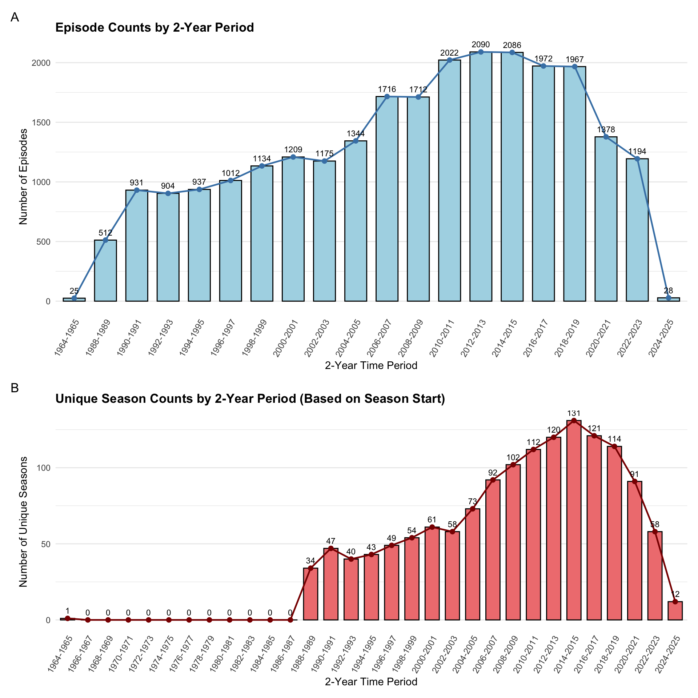
Within this dataset, both the total number of episodes and the count of unique seasons starting per 2-year period show a similar trend, rising from the early 1990s to a peak in the mid-2010s before decreasing.
3.2.2 TV genres Distibutions: Episode-, Season-, and Show-Level Counts by 2-Year Period
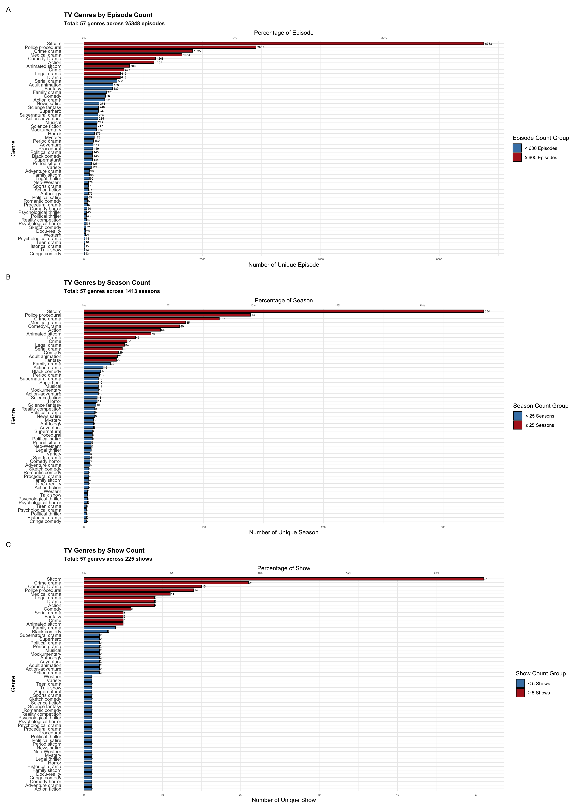
| Genre | # Episodes | % Episodes | Episode Group | # Seasons | % Seasons | Season Group | # Shows | % Shows | Show Group |
|---|---|---|---|---|---|---|---|---|---|
| Action | 1181 | 4.7% | ≥ 600 Episodes | 64 | 4.5% | ≥ 25 Seasons | 9 | 4.0% | ≥ 5 Shows |
| Action drama | 351 | 1.4% | < 600 Episodes | 16 | 1.1% | < 25 Seasons | 2 | 0.9% | < 5 Shows |
| Action fiction | 76 | 0.3% | < 600 Episodes | 4 | 0.3% | < 25 Seasons | 1 | 0.4% | < 5 Shows |
| Action-adventure | 235 | 0.9% | < 600 Episodes | 12 | 0.8% | < 25 Seasons | 2 | 0.9% | < 5 Shows |
| Adult animation | 489 | 1.9% | < 600 Episodes | 28 | 2.0% | ≥ 25 Seasons | 2 | 0.9% | < 5 Shows |
| Adventure | 154 | 0.6% | < 600 Episodes | 8 | 0.6% | < 25 Seasons | 2 | 0.9% | < 5 Shows |
| Adventure drama | 96 | 0.4% | < 600 Episodes | 5 | 0.4% | < 25 Seasons | 1 | 0.4% | < 5 Shows |
| Animated sitcom | 769 | 3.0% | ≥ 600 Episodes | 56 | 4.0% | ≥ 25 Seasons | 5 | 2.2% | ≥ 5 Shows |
| Anthology | 75 | 0.3% | < 600 Episodes | 8 | 0.6% | < 25 Seasons | 2 | 0.9% | < 5 Shows |
| Black comedy | 145 | 0.6% | < 600 Episodes | 14 | 1.0% | < 25 Seasons | 3 | 1.3% | < 5 Shows |
| Comedy | 363 | 1.4% | < 600 Episodes | 29 | 2.1% | ≥ 25 Seasons | 6 | 2.7% | ≥ 5 Shows |
| Comedy horror | 50 | 0.2% | < 600 Episodes | 5 | 0.4% | < 25 Seasons | 1 | 0.4% | < 5 Shows |
| Comedy-Drama | 1208 | 4.8% | ≥ 600 Episodes | 80 | 5.7% | ≥ 25 Seasons | 15 | 6.7% | ≥ 5 Shows |
| Crime | 678 | 2.7% | ≥ 600 Episodes | 36 | 2.5% | ≥ 25 Seasons | 5 | 2.2% | ≥ 5 Shows |
| Crime drama | 1835 | 7.2% | ≥ 600 Episodes | 113 | 8.0% | ≥ 25 Seasons | 21 | 9.3% | ≥ 5 Shows |
| Cringe comedy | 13 | 0.1% | < 600 Episodes | 2 | 0.1% | < 25 Seasons | 1 | 0.4% | < 5 Shows |
| Docu-reality | 28 | 0.1% | < 600 Episodes | 4 | 0.3% | < 25 Seasons | 1 | 0.4% | < 5 Shows |
| Drama | 613 | 2.4% | ≥ 600 Episodes | 43 | 3.0% | ≥ 25 Seasons | 9 | 4.0% | ≥ 5 Shows |
| Family drama | 378 | 1.5% | < 600 Episodes | 22 | 1.6% | < 25 Seasons | 4 | 1.8% | < 5 Shows |
| Family sitcom | 95 | 0.4% | < 600 Episodes | 4 | 0.3% | < 25 Seasons | 1 | 0.4% | < 5 Shows |
| Fantasy | 482 | 1.9% | < 600 Episodes | 27 | 1.9% | ≥ 25 Seasons | 5 | 2.2% | ≥ 5 Shows |
| Historical drama | 15 | 0.1% | < 600 Episodes | 2 | 0.1% | < 25 Seasons | 1 | 0.4% | < 5 Shows |
| Horror | 177 | 0.7% | < 600 Episodes | 11 | 0.8% | < 25 Seasons | 1 | 0.4% | < 5 Shows |
| Legal drama | 615 | 2.4% | ≥ 600 Episodes | 34 | 2.4% | ≥ 25 Seasons | 9 | 4.0% | ≥ 5 Shows |
| Legal thriller | 90 | 0.4% | < 600 Episodes | 6 | 0.4% | < 25 Seasons | 1 | 0.4% | < 5 Shows |
| Medical drama | 1654 | 6.5% | ≥ 600 Episodes | 85 | 6.0% | ≥ 25 Seasons | 11 | 4.9% | ≥ 5 Shows |
| Mockumentary | 213 | 0.8% | < 600 Episodes | 12 | 0.8% | < 25 Seasons | 2 | 0.9% | < 5 Shows |
| Musical | 222 | 0.9% | < 600 Episodes | 12 | 0.8% | < 25 Seasons | 2 | 0.9% | < 5 Shows |
| Mystery | 173 | 0.7% | < 600 Episodes | 8 | 0.6% | < 25 Seasons | 1 | 0.4% | < 5 Shows |
| Neo-Western | 78 | 0.3% | < 600 Episodes | 6 | 0.4% | < 25 Seasons | 1 | 0.4% | < 5 Shows |
| News satire | 254 | 1.0% | < 600 Episodes | 9 | 0.6% | < 25 Seasons | 1 | 0.4% | < 5 Shows |
| Period drama | 162 | 0.6% | < 600 Episodes | 13 | 0.9% | < 25 Seasons | 2 | 0.9% | < 5 Shows |
| Period sitcom | 126 | 0.5% | < 600 Episodes | 6 | 0.4% | < 25 Seasons | 1 | 0.4% | < 5 Shows |
| Police procedural | 2905 | 11.5% | ≥ 600 Episodes | 139 | 9.8% | ≥ 25 Seasons | 14 | 6.2% | ≥ 5 Shows |
| Political drama | 145 | 0.6% | < 600 Episodes | 9 | 0.6% | < 25 Seasons | 2 | 0.9% | < 5 Shows |
| Political satire | 65 | 0.3% | < 600 Episodes | 7 | 0.5% | < 25 Seasons | 1 | 0.4% | < 5 Shows |
| Political thriller | 43 | 0.2% | < 600 Episodes | 2 | 0.1% | < 25 Seasons | 1 | 0.4% | < 5 Shows |
| Procedural | 149 | 0.6% | < 600 Episodes | 7 | 0.5% | < 25 Seasons | 1 | 0.4% | < 5 Shows |
| Procedural drama | 59 | 0.2% | < 600 Episodes | 4 | 0.3% | < 25 Seasons | 1 | 0.4% | < 5 Shows |
| Psychological drama | 18 | 0.1% | < 600 Episodes | 2 | 0.1% | < 25 Seasons | 1 | 0.4% | < 5 Shows |
| Psychological horror | 38 | 0.1% | < 600 Episodes | 3 | 0.2% | < 25 Seasons | 1 | 0.4% | < 5 Shows |
| Psychological thriller | 45 | 0.2% | < 600 Episodes | 3 | 0.2% | < 25 Seasons | 1 | 0.4% | < 5 Shows |
| Reality competition | 42 | 0.2% | < 600 Episodes | 9 | 0.6% | < 25 Seasons | 1 | 0.4% | < 5 Shows |
| Romantic comedy | 59 | 0.2% | < 600 Episodes | 4 | 0.3% | < 25 Seasons | 1 | 0.4% | < 5 Shows |
| Science fantasy | 248 | 1.0% | < 600 Episodes | 10 | 0.7% | < 25 Seasons | 1 | 0.4% | < 5 Shows |
| Science fiction | 217 | 0.9% | < 600 Episodes | 11 | 0.8% | < 25 Seasons | 1 | 0.4% | < 5 Shows |
| Serial drama | 558 | 2.2% | < 600 Episodes | 32 | 2.3% | ≥ 25 Seasons | 5 | 2.2% | ≥ 5 Shows |
| Sitcom | 6753 | 26.6% | ≥ 600 Episodes | 334 | 23.6% | ≥ 25 Seasons | 51 | 22.7% | ≥ 5 Shows |
| Sketch comedy | 32 | 0.1% | < 600 Episodes | 4 | 0.3% | < 25 Seasons | 1 | 0.4% | < 5 Shows |
| Sports drama | 76 | 0.3% | < 600 Episodes | 5 | 0.4% | < 25 Seasons | 1 | 0.4% | < 5 Shows |
| Superhero | 247 | 1.0% | < 600 Episodes | 12 | 0.8% | < 25 Seasons | 2 | 0.9% | < 5 Shows |
| Supernatural | 144 | 0.6% | < 600 Episodes | 7 | 0.5% | < 25 Seasons | 1 | 0.4% | < 5 Shows |
| Supernatural drama | 235 | 0.9% | < 600 Episodes | 12 | 0.8% | < 25 Seasons | 2 | 0.9% | < 5 Shows |
| Talk show | 13 | 0.1% | < 600 Episodes | 3 | 0.2% | < 25 Seasons | 1 | 0.4% | < 5 Shows |
| Teen drama | 16 | 0.1% | < 600 Episodes | 2 | 0.1% | < 25 Seasons | 1 | 0.4% | < 5 Shows |
| Variety | 124 | 0.5% | < 600 Episodes | 5 | 0.4% | < 25 Seasons | 1 | 0.4% | < 5 Shows |
| Western | 24 | 0.1% | < 600 Episodes | 3 | 0.2% | < 25 Seasons | 1 | 0.4% | < 5 Shows |
Grouping by Name/Typical Characteristics (A Priori Assumptions)
Grouping for Narrative/Reward Pattern Exploration
This aims to create groups that are thematically coherent and likely to show meaningfully different narrative signatures or reward patterns. It blends the above approaches.
- Group 1: Sitcoms (Distinct comedic format)
- Group 2: Procedurals (Combine Police, Medical, Legal, Crime Drama, Procedural, Legal Thriller - share case-of-the-week structure)
- Group 3: Serialized Dramas (Combine Serial Drama, Drama, Comedy-Drama, Family Drama, Teen Drama, Period Drama, Political Drama, Historical Drama, Psychological Drama - focus on ongoing arcs/character)
- Group 4: Genre Fiction (Combine Action, Fantasy, Sci-Fi, Superhero, Horror, Supernatural, Western, Adventure - includes subgenres like Action Drama, Comedy Horror etc.)
- Group 5: Animation (Combine Animated Sitcom, Adult Animation)
- Group 6: Alternative Comedy (Combine Comedy (generic), Black Comedy, Mockumentary, Satire*, Musical, Cringe, Romantic, Sketch, Period Sitcom)
- Group 7: Thrillers/Mystery (Combine Psychological Thriller, Political Thriller, Mystery - distinct from procedural crime)
- Group 8: Reality/Other (Combine Reality Comp, Docu-reality, Talk, Variety, Anthology - likely exclude from some narrative comparisons)
Categorizing Groups under Profit vs. Prestige Context
- Likely Profit-Focused Tendency:
- Group 1: Sitcoms: High volume, longevity aim.
- Group 2: Procedurals: Proven format for long runs, syndication.
- (Part of) Group 5: Animation (specifically broad appeal Animated Sitcoms)
- Group 8: Reality/Other (often lower cost, format driven)
- Likely Prestige-Focused Tendency / Higher Variability:
- Group 3: Serialized Dramas: Often target awards, critical acclaim, complex narratives (though some achieve high profit).
- Group 6: Alternative Comedy: Often critically favored, niche audiences.
- Group 7: Thrillers/Mystery: Can be prestigious, often shorter/contained runs.
- (Part of) Group 5: Animation (specifically Adult Animation aiming for niche/critical demo)
- Mixed / High Potential for Both:
- Group 4: Genre Fiction: Can be massive Profit drivers (MCU, GoT) or gain Prestige through execution/themes. Success highly variable.
| Simple_Category | Genres |
|---|---|
| Drama | Action, Action drama, Action fiction, Action-adventure, Adventure, Adventure drama, Anthology, Crime, Crime drama, Drama, Fantasy, Family drama, Historical drama, Horror, Legal drama, Legal thriller, Medical drama, Mystery, Neo-Western, Period drama, Political drama, Political thriller, Police procedural, Procedural, Procedural drama, Psychological drama, Psychological horror, Psychological thriller, Science fantasy, Science fiction, Serial drama, Sports drama, Superhero, Supernatural, Supernatural drama, Teen drama, Western |
| Comedy | Animated sitcom, Black comedy, Comedy, Comedy-Drama, Comedy horror, Cringe comedy, Family sitcom, Mockumentary, Musical, News satire, Period sitcom, Political satire, Romantic comedy, Sitcom, Sketch comedy, Adult animation |
| Other / Exclude | Docu-reality, Reality competition, Talk show, Variety |
3.2.3 TV Network Distributions: Episode & Show Counts
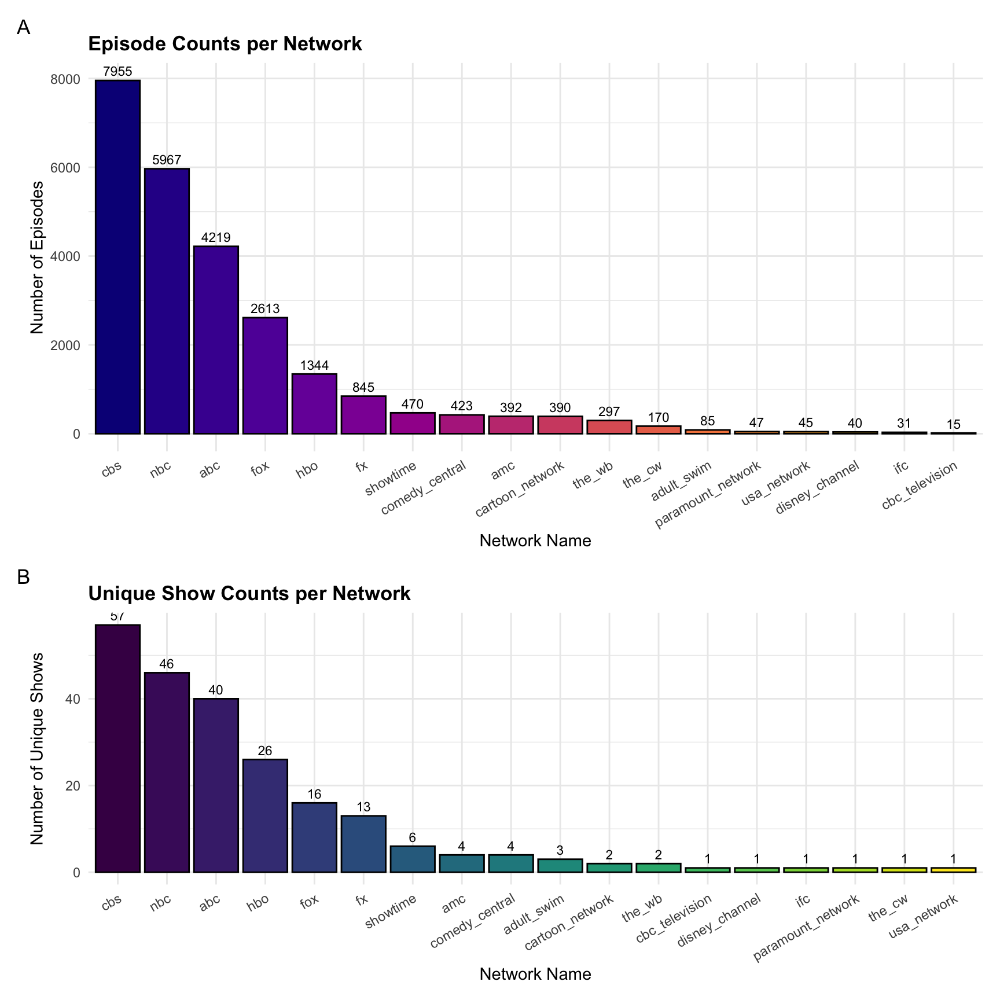
3.3 Key Variable Definition Tables
4 Narrative-related Variable Analysis
This section explores the distributions of all narrative features.
4.1 Overall Distributions
4.1.1 Episode Level Analysis
| Variable | Mean | StdDev | Min | Max | Q25 | Median | Q75 | Skew |
|---|---|---|---|---|---|---|---|---|
| sd_div_mean_2 | 14660.80 | 312136.77 | 0.00 | 39955453.61 | 4721.72 | 5996.63 | 8405.47 | 99.04 |
| sd_div_mean_3 | 14487.10 | 203055.52 | 0.00 | 18959296.86 | 5091.91 | 6485.63 | 9041.58 | 70.56 |
| sd_sum_1 | 20.81 | 1.44 | 0.00 | 25.09 | 20.00 | 20.93 | 21.74 | -1.85 |
| sd_sum_2 | 20.66 | 1.48 | 0.00 | 24.76 | 19.83 | 20.78 | 21.65 | -1.88 |
| sd_sum_3 | 21.28 | 1.49 | 0.00 | 24.63 | 20.52 | 21.46 | 22.23 | -3.18 |
| sd_scaled_1 | 668.97 | 46.55 | 0.00 | 809.84 | 643.07 | 672.83 | 699.18 | -1.85 |
| sd_scaled_2 | 664.47 | 48.09 | 0.00 | 797.50 | 637.45 | 668.30 | 696.35 | -1.87 |
| sd_scaled_3 | 684.65 | 48.13 | 0.00 | 796.91 | 659.80 | 690.21 | 715.29 | -3.15 |
| anger_1 | 0.18 | 0.09 | 0.01 | 0.65 | 0.11 | 0.16 | 0.23 | 0.89 |
| anger_2 | 0.20 | 0.10 | 0.01 | 0.68 | 0.13 | 0.19 | 0.26 | 0.76 |
| anger_3 | 0.21 | 0.10 | 0.00 | 0.79 | 0.14 | 0.20 | 0.27 | 0.65 |
| surprise_1 | 0.16 | 0.08 | 0.00 | 0.90 | 0.10 | 0.14 | 0.20 | 1.09 |
| surprise_2 | 0.14 | 0.07 | 0.00 | 0.71 | 0.09 | 0.13 | 0.18 | 1.08 |
| surprise_3 | 0.14 | 0.07 | 0.00 | 0.65 | 0.08 | 0.12 | 0.17 | 1.16 |
| disgust_1 | 0.17 | 0.08 | 0.00 | 0.67 | 0.12 | 0.16 | 0.22 | 0.99 |
| disgust_2 | 0.19 | 0.08 | 0.00 | 0.77 | 0.13 | 0.17 | 0.23 | 0.96 |
| disgust_3 | 0.16 | 0.07 | 0.00 | 0.64 | 0.11 | 0.15 | 0.20 | 1.01 |
| sadness_1 | 0.09 | 0.05 | 0.01 | 0.53 | 0.05 | 0.08 | 0.11 | 1.66 |
| sadness_2 | 0.09 | 0.05 | 0.01 | 0.55 | 0.05 | 0.07 | 0.11 | 1.71 |
| sadness_3 | 0.10 | 0.06 | 0.01 | 0.50 | 0.06 | 0.09 | 0.13 | 1.48 |
| neutral_1 | 0.26 | 0.10 | 0.02 | 0.71 | 0.19 | 0.26 | 0.32 | 0.31 |
| neutral_2 | 0.24 | 0.09 | 0.02 | 0.66 | 0.17 | 0.23 | 0.30 | 0.43 |
| neutral_3 | 0.23 | 0.09 | 0.02 | 0.67 | 0.17 | 0.23 | 0.29 | 0.44 |
| fear_1 | 0.10 | 0.06 | 0.00 | 0.57 | 0.05 | 0.08 | 0.13 | 1.26 |
| fear_2 | 0.10 | 0.06 | 0.01 | 0.69 | 0.05 | 0.09 | 0.14 | 1.32 |
| fear_3 | 0.10 | 0.06 | 0.01 | 0.57 | 0.05 | 0.09 | 0.13 | 1.25 |
| joy_1 | 0.05 | 0.05 | 0.00 | 0.67 | 0.01 | 0.03 | 0.07 | 2.46 |
| joy_2 | 0.04 | 0.05 | 0.00 | 0.57 | 0.01 | 0.02 | 0.05 | 2.80 |
| joy_3 | 0.05 | 0.05 | 0.00 | 0.59 | 0.01 | 0.03 | 0.07 | 2.18 |
| positive_1 | 0.37 | 0.19 | 0.00 | 1.00 | 0.22 | 0.36 | 0.49 | 0.44 |
| positive_2 | 0.33 | 0.18 | 0.00 | 1.00 | 0.20 | 0.29 | 0.43 | 0.54 |
| positive_3 | 0.38 | 0.18 | 0.00 | 1.00 | 0.25 | 0.37 | 0.50 | 0.38 |
| negative_1 | 0.63 | 0.19 | 0.00 | 1.00 | 0.51 | 0.64 | 0.78 | -0.44 |
| negative_2 | 0.67 | 0.18 | 0.00 | 1.00 | 0.57 | 0.71 | 0.80 | -0.54 |
| negative_3 | 0.62 | 0.18 | 0.00 | 1.00 | 0.50 | 0.63 | 0.75 | -0.38 |
| engaged_1 | 0.70 | 0.10 | 0.02 | 0.92 | 0.64 | 0.71 | 0.77 | -1.19 |
| engaged_2 | 0.71 | 0.10 | 0.02 | 0.94 | 0.66 | 0.73 | 0.78 | -1.21 |
| engaged_3 | 0.64 | 0.11 | 0.02 | 0.91 | 0.58 | 0.65 | 0.71 | -0.80 |
| not_engaged_1 | 0.30 | 0.10 | 0.08 | 0.98 | 0.23 | 0.29 | 0.36 | 1.19 |
| not_engaged_2 | 0.29 | 0.10 | 0.06 | 0.98 | 0.22 | 0.27 | 0.34 | 1.21 |
| not_engaged_3 | 0.36 | 0.11 | 0.09 | 0.98 | 0.29 | 0.35 | 0.42 | 0.80 |
| wc_1 | 129.34 | 27.80 | 0.00 | 397.86 | 112.79 | 131.00 | 147.71 | -0.39 |
| wc_2 | 128.91 | 27.23 | 0.00 | 336.80 | 112.79 | 130.21 | 146.43 | -0.31 |
| wc_3 | 108.26 | 26.56 | 0.00 | 306.80 | 91.60 | 109.00 | 125.50 | -0.17 |
| analytic_1 | 30.92 | 11.65 | 0.00 | 93.31 | 22.45 | 29.99 | 38.38 | 0.47 |
| analytic_2 | 27.60 | 11.26 | 0.00 | 93.26 | 19.34 | 26.33 | 34.49 | 0.66 |
| analytic_3 | 25.99 | 10.86 | 0.00 | 92.88 | 18.05 | 24.95 | 32.73 | 0.60 |
| clout_1 | 71.54 | 11.06 | 0.00 | 98.89 | 65.69 | 72.99 | 79.13 | -1.22 |
| clout_2 | 73.02 | 10.60 | 0.00 | 98.82 | 67.53 | 74.39 | 80.19 | -1.39 |
| clout_3 | 70.42 | 11.61 | 0.00 | 97.04 | 64.08 | 71.94 | 78.48 | -1.17 |
| authentic_1 | 47.63 | 13.52 | 0.00 | 99.00 | 38.33 | 46.94 | 56.43 | 0.24 |
| authentic_2 | 46.75 | 13.72 | 0.00 | 99.00 | 37.41 | 46.42 | 55.75 | 0.15 |
| authentic_3 | 50.14 | 14.12 | 0.00 | 99.00 | 40.61 | 49.98 | 59.51 | 0.02 |
| tone_1 | 53.52 | 15.86 | 0.00 | 99.00 | 42.28 | 53.28 | 64.58 | 0.02 |
| tone_2 | 52.65 | 16.14 | 0.00 | 98.99 | 41.10 | 52.02 | 64.02 | 0.08 |
| tone_3 | 52.03 | 15.34 | 0.00 | 98.26 | 41.26 | 51.64 | 62.67 | 0.04 |
| wps_1 | 7.23 | 3.85 | 0.00 | 137.17 | 5.74 | 6.45 | 7.43 | 9.08 |
| wps_2 | 6.70 | 3.03 | 0.00 | 147.96 | 5.65 | 6.30 | 7.08 | 14.39 |
| wps_3 | 7.00 | 3.67 | 0.00 | 143.86 | 5.51 | 6.26 | 7.29 | 8.95 |
| sixltr_1 | 11.34 | 2.51 | 0.00 | 27.30 | 9.72 | 11.17 | 12.77 | 0.44 |
| sixltr_2 | 11.08 | 2.49 | 0.00 | 42.76 | 9.44 | 10.85 | 12.48 | 0.65 |
| sixltr_3 | 10.48 | 2.61 | 0.00 | 29.05 | 8.74 | 10.18 | 11.91 | 0.61 |
| dic_1 | 86.77 | 5.95 | 0.00 | 98.65 | 85.26 | 87.81 | 89.86 | -6.13 |
| dic_2 | 88.31 | 5.28 | 0.00 | 99.63 | 86.88 | 88.96 | 90.77 | -8.73 |
| dic_3 | 87.68 | 6.30 | 0.00 | 97.33 | 85.89 | 88.80 | 91.06 | -6.31 |
| cogproc_1 | 10.55 | 1.75 | 0.00 | 23.66 | 9.48 | 10.58 | 11.66 | -0.39 |
| cogproc_2 | 11.30 | 1.79 | 0.00 | 20.84 | 10.19 | 11.32 | 12.45 | -0.46 |
| cogproc_3 | 11.06 | 2.05 | 0.00 | 21.68 | 9.81 | 11.12 | 12.38 | -0.43 |
| insight_1 | 2.24 | 0.66 | 0.00 | 7.07 | 1.80 | 2.21 | 2.64 | 0.31 |
| insight_2 | 2.47 | 0.69 | 0.00 | 6.24 | 2.01 | 2.45 | 2.91 | 0.19 |
| insight_3 | 2.44 | 0.77 | 0.00 | 9.84 | 1.92 | 2.40 | 2.92 | 0.40 |
| cause_1 | 1.31 | 0.45 | 0.00 | 6.14 | 1.02 | 1.28 | 1.57 | 0.72 |
| cause_2 | 1.39 | 0.45 | 0.00 | 8.76 | 1.09 | 1.36 | 1.66 | 0.64 |
| cause_3 | 1.33 | 0.50 | 0.00 | 8.54 | 0.99 | 1.29 | 1.61 | 1.04 |
| discrep_1 | 1.66 | 0.52 | 0.00 | 5.17 | 1.31 | 1.63 | 1.98 | 0.43 |
| discrep_2 | 1.80 | 0.53 | 0.00 | 4.48 | 1.44 | 1.77 | 2.13 | 0.31 |
| discrep_3 | 1.76 | 0.59 | 0.00 | 7.02 | 1.36 | 1.72 | 2.12 | 0.49 |
| tentat_1 | 2.25 | 0.64 | 0.00 | 5.69 | 1.82 | 2.22 | 2.65 | 0.30 |
| tentat_2 | 2.35 | 0.64 | 0.00 | 6.68 | 1.93 | 2.33 | 2.75 | 0.24 |
| tentat_3 | 2.16 | 0.67 | 0.00 | 9.31 | 1.71 | 2.12 | 2.57 | 0.61 |
| certain_1 | 1.51 | 0.50 | 0.00 | 15.15 | 1.19 | 1.47 | 1.79 | 1.84 |
| certain_2 | 1.56 | 0.49 | 0.00 | 8.88 | 1.24 | 1.52 | 1.83 | 1.13 |
| certain_3 | 1.64 | 0.61 | 0.00 | 8.89 | 1.25 | 1.57 | 1.94 | 1.71 |
| differ_1 | 2.65 | 0.69 | 0.00 | 13.00 | 2.20 | 2.64 | 3.09 | 0.36 |
| differ_2 | 2.89 | 0.70 | 0.00 | 9.48 | 2.43 | 2.87 | 3.33 | 0.17 |
| differ_3 | 2.80 | 0.79 | 0.00 | 14.63 | 2.29 | 2.78 | 3.29 | 0.39 |
| percept_1 | 2.55 | 0.76 | 0.00 | 13.34 | 2.06 | 2.47 | 2.94 | 1.15 |
| percept_2 | 2.56 | 0.75 | 0.00 | 14.49 | 2.07 | 2.49 | 2.95 | 1.36 |
| percept_3 | 2.49 | 0.86 | 0.00 | 15.96 | 1.94 | 2.38 | 2.91 | 1.81 |
| see_1 | 1.13 | 0.51 | 0.00 | 9.05 | 0.80 | 1.06 | 1.38 | 1.63 |
| see_2 | 1.11 | 0.49 | 0.00 | 8.89 | 0.78 | 1.04 | 1.36 | 1.76 |
| see_3 | 1.07 | 0.56 | 0.00 | 9.88 | 0.71 | 0.98 | 1.31 | 2.29 |
| hear_1 | 0.76 | 0.42 | 0.00 | 12.32 | 0.49 | 0.70 | 0.95 | 2.92 |
| hear_2 | 0.79 | 0.41 | 0.00 | 7.75 | 0.51 | 0.73 | 0.98 | 2.07 |
| hear_3 | 0.75 | 0.46 | 0.00 | 14.08 | 0.47 | 0.68 | 0.95 | 3.42 |
| feel_1 | 0.50 | 0.32 | 0.00 | 7.56 | 0.28 | 0.44 | 0.64 | 2.37 |
| feel_2 | 0.51 | 0.32 | 0.00 | 7.20 | 0.29 | 0.46 | 0.66 | 2.16 |
| feel_3 | 0.52 | 0.40 | 0.00 | 15.62 | 0.28 | 0.45 | 0.67 | 6.52 |
| drives_1 | 7.74 | 1.54 | 0.00 | 22.90 | 6.76 | 7.66 | 8.63 | 0.42 |
| drives_2 | 7.69 | 1.48 | 0.00 | 43.02 | 6.74 | 7.59 | 8.52 | 0.85 |
| drives_3 | 7.70 | 1.69 | 0.00 | 19.95 | 6.60 | 7.56 | 8.67 | 0.51 |
| affiliation_1 | 2.74 | 0.99 | 0.00 | 17.12 | 2.08 | 2.63 | 3.26 | 1.43 |
| affiliation_2 | 2.68 | 0.94 | 0.00 | 16.60 | 2.05 | 2.58 | 3.20 | 1.10 |
| affiliation_3 | 2.73 | 1.09 | 0.00 | 15.15 | 1.99 | 2.58 | 3.27 | 1.33 |
| achieve_1 | 0.95 | 0.42 | 0.00 | 5.58 | 0.66 | 0.89 | 1.17 | 1.27 |
| achieve_2 | 0.96 | 0.47 | 0.00 | 37.85 | 0.68 | 0.91 | 1.18 | 19.25 |
| achieve_3 | 0.96 | 0.49 | 0.00 | 14.23 | 0.64 | 0.89 | 1.19 | 2.38 |
| power_1 | 2.26 | 0.84 | 0.00 | 11.55 | 1.71 | 2.15 | 2.68 | 1.46 |
| power_2 | 2.21 | 0.78 | 0.00 | 9.54 | 1.69 | 2.11 | 2.59 | 1.26 |
| power_3 | 2.15 | 0.88 | 0.00 | 17.50 | 1.58 | 2.01 | 2.56 | 1.88 |
| reward_1 | 1.84 | 0.62 | 0.00 | 16.17 | 1.43 | 1.78 | 2.18 | 1.48 |
| reward_2 | 1.84 | 0.60 | 0.00 | 8.71 | 1.43 | 1.79 | 2.18 | 0.83 |
| reward_3 | 1.88 | 0.73 | 0.00 | 9.34 | 1.40 | 1.79 | 2.26 | 1.31 |
| risk_1 | 0.52 | 0.33 | 0.00 | 7.45 | 0.30 | 0.47 | 0.68 | 2.99 |
| risk_2 | 0.56 | 0.31 | 0.00 | 3.56 | 0.34 | 0.52 | 0.73 | 1.19 |
| risk_3 | 0.58 | 0.41 | 0.00 | 10.66 | 0.33 | 0.51 | 0.74 | 4.43 |
| relativ_1 | 12.62 | 2.04 | 0.00 | 27.54 | 11.36 | 12.53 | 13.81 | 0.05 |
| relativ_2 | 12.31 | 1.96 | 0.00 | 37.31 | 11.07 | 12.22 | 13.47 | 0.20 |
| relativ_3 | 12.26 | 2.29 | 0.00 | 30.42 | 10.82 | 12.11 | 13.54 | 0.33 |
| motion_1 | 2.49 | 0.84 | 0.00 | 14.95 | 1.95 | 2.38 | 2.90 | 1.58 |
| motion_2 | 2.50 | 0.83 | 0.00 | 18.59 | 1.96 | 2.40 | 2.91 | 1.89 |
| motion_3 | 2.62 | 1.01 | 0.00 | 16.48 | 1.97 | 2.47 | 3.09 | 1.90 |
| space_1 | 6.23 | 1.31 | 0.00 | 19.89 | 5.37 | 6.14 | 6.98 | 0.44 |
| space_2 | 6.15 | 1.27 | 0.00 | 21.26 | 5.32 | 6.06 | 6.87 | 0.51 |
| space_3 | 5.97 | 1.44 | 0.00 | 19.08 | 5.02 | 5.84 | 6.77 | 0.68 |
| time_1 | 4.17 | 1.02 | 0.00 | 19.83 | 3.51 | 4.11 | 4.75 | 0.86 |
| time_2 | 3.93 | 0.91 | 0.00 | 11.83 | 3.34 | 3.88 | 4.47 | 0.43 |
| time_3 | 3.98 | 1.10 | 0.00 | 17.88 | 3.28 | 3.89 | 4.57 | 1.10 |
Note: sd_div_mean_1 is missing from our raw dataset.
4.1.1.1 Group 1: Immersion & Emotion
| Dataset Variable | Description |
|---|---|
| sd_div_mean_2, sd_div_mean_3 | This transportation measurement aims to assess how quickly a consumer becomes immersed in a story—both mentally and emotionally. It evaluates the extent to which they lose awareness of their surroundings and become absorbed in the narrative. |
| sd_sum_1, sd_sum_2, sd_sum_3 | The sum of the standard deviation per act, which aids us in understanding the amount of emotion variance for each act. |
| sd_scaled_1, sd_scaled_2, sd_scaled_3 | The standard deviation scaled across all emotions for ease of comparison. |
| anger_1, anger_2, anger_3 | The amount of anger contained in the act. |
| surprise_1, surprise_2, surprise_3 | The amount of surprise contained in the act. |
| disgust_1, disgust_2, disgust_3 | The amount of disgust contained in the act. |
| sadness_1, sadness_2, sadness_3 | The amount of sadness contained in the act. |
| neutral_1, neutral_2, neutral_3 | The amount of neutrality contained in the act. |
| fear_1, fear_2, fear_3 | The amount of fear contained in the act. |
| joy_1, joy_2, joy_3 | The amount of joy contained in the act. |
| positive_1, positive_2, positive_3 | The amount of positivity contained in the act. |
| negative_1, negative_2, negative_3 | The amount of negativity contained in the act. |
| engaged_1, engaged_2, engaged_3 | There is high psychological involvement or emotional investment, including greater use of personal pronouns, more emotional words, and greater cognitive processing contained in the act. |
| not_engaged_1, not_engaged_2, not_engaged_3 | There is low psychological involvement or emotional investment, including lesser use of personal pronouns, less emotional words, and less cognitive processing contained in the act. |
| Variable | Mean | StdDev | Min | Max | Q25 | Median | Q75 | Skew |
|---|---|---|---|---|---|---|---|---|
| sd_div_mean_2 | 14660.80 | 312136.77 | 0 | 39955453.61 | 4721.72 | 5996.63 | 8405.47 | 99.04 |
| sd_div_mean_3 | 14487.10 | 203055.52 | 0 | 18959296.86 | 5091.91 | 6485.63 | 9041.58 | 70.56 |
| sd_sum_1 | 20.81 | 1.44 | 0 | 25.09 | 20.00 | 20.93 | 21.74 | -1.85 |
| sd_sum_2 | 20.66 | 1.48 | 0 | 24.76 | 19.83 | 20.78 | 21.65 | -1.88 |
| sd_sum_3 | 21.28 | 1.49 | 0 | 24.63 | 20.52 | 21.46 | 22.23 | -3.18 |
| sd_scaled_1 | 668.97 | 46.55 | 0 | 809.84 | 643.07 | 672.83 | 699.18 | -1.85 |
| sd_scaled_2 | 664.47 | 48.09 | 0 | 797.50 | 637.45 | 668.30 | 696.35 | -1.87 |
| sd_scaled_3 | 684.65 | 48.13 | 0 | 796.91 | 659.80 | 690.21 | 715.29 | -3.15 |
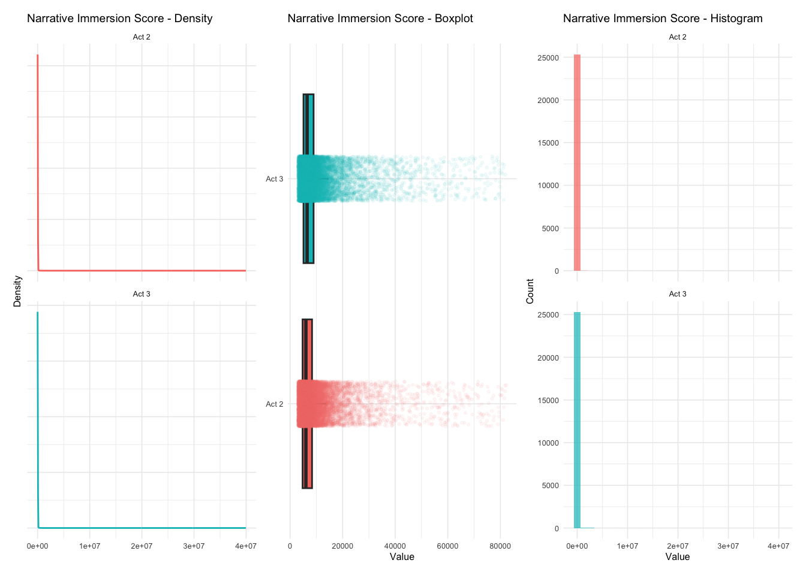
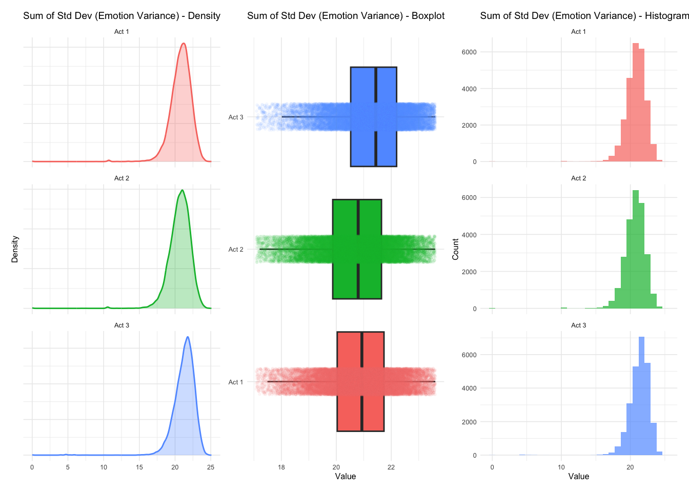
| Variable | Mean | StdDev | Min | Max | Q25 | Median | Q75 | Skew |
|---|---|---|---|---|---|---|---|---|
| anger_1 | 0.18 | 0.09 | 0.01 | 0.65 | 0.11 | 0.16 | 0.23 | 0.89 |
| anger_2 | 0.20 | 0.10 | 0.01 | 0.68 | 0.13 | 0.19 | 0.26 | 0.76 |
| anger_3 | 0.21 | 0.10 | 0.00 | 0.79 | 0.14 | 0.20 | 0.27 | 0.65 |
| surprise_1 | 0.16 | 0.08 | 0.00 | 0.90 | 0.10 | 0.14 | 0.20 | 1.09 |
| surprise_2 | 0.14 | 0.07 | 0.00 | 0.71 | 0.09 | 0.13 | 0.18 | 1.08 |
| surprise_3 | 0.14 | 0.07 | 0.00 | 0.65 | 0.08 | 0.12 | 0.17 | 1.16 |
| disgust_1 | 0.17 | 0.08 | 0.00 | 0.67 | 0.12 | 0.16 | 0.22 | 0.99 |
| disgust_2 | 0.19 | 0.08 | 0.00 | 0.77 | 0.13 | 0.17 | 0.23 | 0.96 |
| disgust_3 | 0.16 | 0.07 | 0.00 | 0.64 | 0.11 | 0.15 | 0.20 | 1.01 |
| sadness_1 | 0.09 | 0.05 | 0.01 | 0.53 | 0.05 | 0.08 | 0.11 | 1.66 |
| sadness_2 | 0.09 | 0.05 | 0.01 | 0.55 | 0.05 | 0.07 | 0.11 | 1.71 |
| sadness_3 | 0.10 | 0.06 | 0.01 | 0.50 | 0.06 | 0.09 | 0.13 | 1.48 |
| neutral_1 | 0.26 | 0.10 | 0.02 | 0.71 | 0.19 | 0.26 | 0.32 | 0.31 |
| neutral_2 | 0.24 | 0.09 | 0.02 | 0.66 | 0.17 | 0.23 | 0.30 | 0.43 |
| neutral_3 | 0.23 | 0.09 | 0.02 | 0.67 | 0.17 | 0.23 | 0.29 | 0.44 |
| fear_1 | 0.10 | 0.06 | 0.00 | 0.57 | 0.05 | 0.08 | 0.13 | 1.26 |
| fear_2 | 0.10 | 0.06 | 0.01 | 0.69 | 0.05 | 0.09 | 0.14 | 1.32 |
| fear_3 | 0.10 | 0.06 | 0.01 | 0.57 | 0.05 | 0.09 | 0.13 | 1.25 |
| joy_1 | 0.05 | 0.05 | 0.00 | 0.67 | 0.01 | 0.03 | 0.07 | 2.46 |
| joy_2 | 0.04 | 0.05 | 0.00 | 0.57 | 0.01 | 0.02 | 0.05 | 2.80 |
| joy_3 | 0.05 | 0.05 | 0.00 | 0.59 | 0.01 | 0.03 | 0.07 | 2.18 |
| positive_1 | 0.37 | 0.19 | 0.00 | 1.00 | 0.22 | 0.36 | 0.49 | 0.44 |
| positive_2 | 0.33 | 0.18 | 0.00 | 1.00 | 0.20 | 0.29 | 0.43 | 0.54 |
| positive_3 | 0.38 | 0.18 | 0.00 | 1.00 | 0.25 | 0.37 | 0.50 | 0.38 |
| negative_1 | 0.63 | 0.19 | 0.00 | 1.00 | 0.51 | 0.64 | 0.78 | -0.44 |
| negative_2 | 0.67 | 0.18 | 0.00 | 1.00 | 0.57 | 0.71 | 0.80 | -0.54 |
| negative_3 | 0.62 | 0.18 | 0.00 | 1.00 | 0.50 | 0.63 | 0.75 | -0.38 |
| engaged_1 | 0.70 | 0.10 | 0.02 | 0.92 | 0.64 | 0.71 | 0.77 | -1.19 |
| engaged_2 | 0.71 | 0.10 | 0.02 | 0.94 | 0.66 | 0.73 | 0.78 | -1.21 |
| engaged_3 | 0.64 | 0.11 | 0.02 | 0.91 | 0.58 | 0.65 | 0.71 | -0.80 |
| not_engaged_1 | 0.30 | 0.10 | 0.08 | 0.98 | 0.23 | 0.29 | 0.36 | 1.19 |
| not_engaged_2 | 0.29 | 0.10 | 0.06 | 0.98 | 0.22 | 0.27 | 0.34 | 1.21 |
| not_engaged_3 | 0.36 | 0.11 | 0.09 | 0.98 | 0.29 | 0.35 | 0.42 | 0.80 |
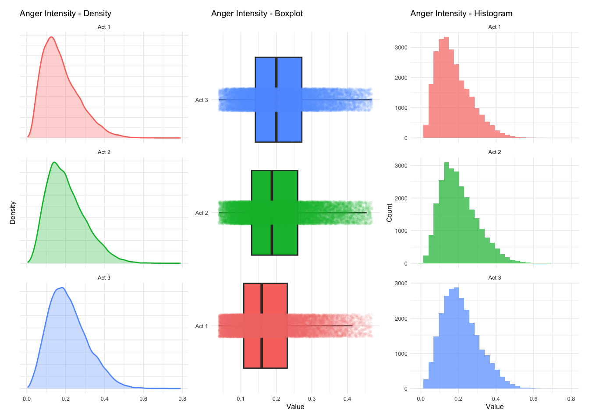
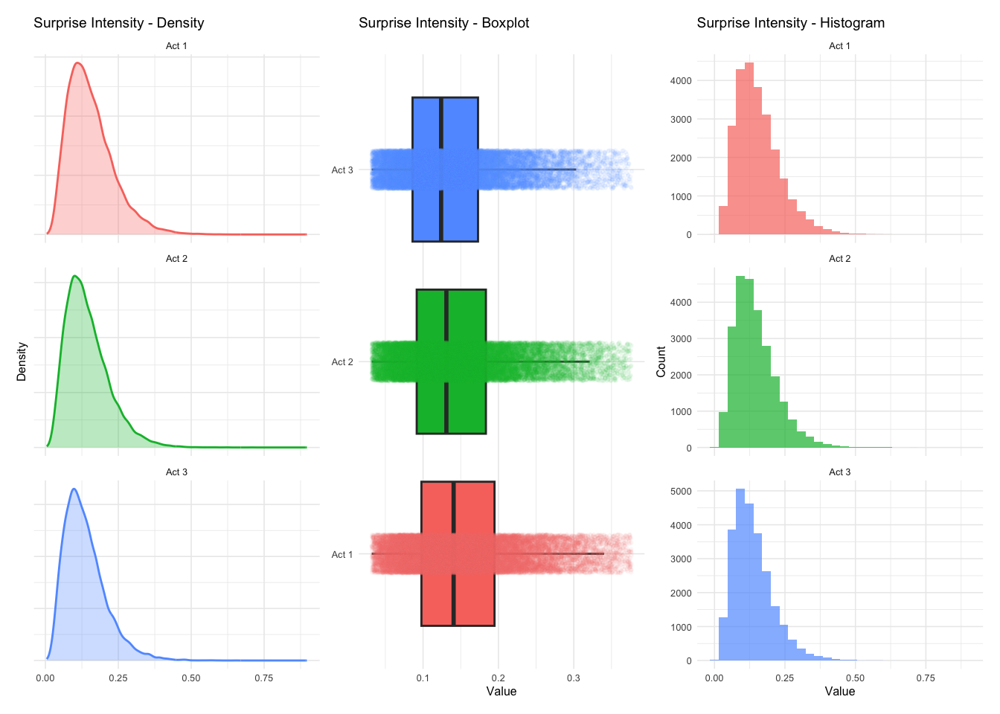
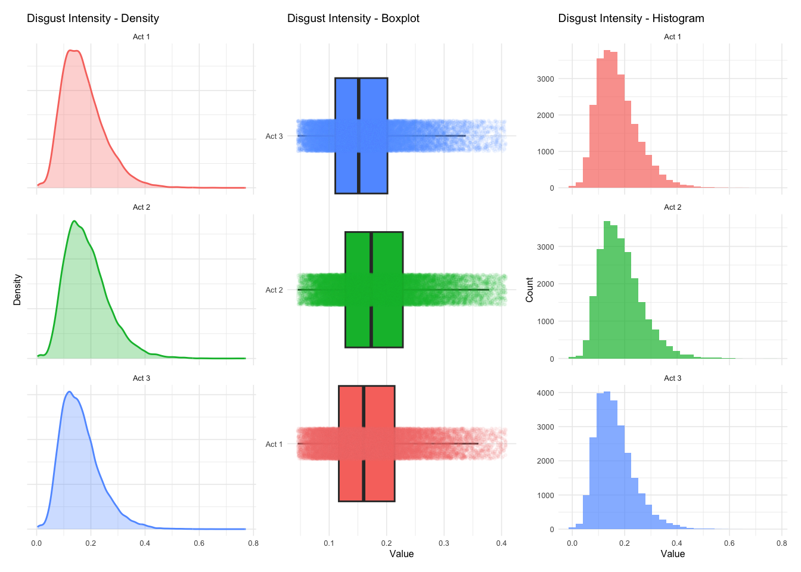
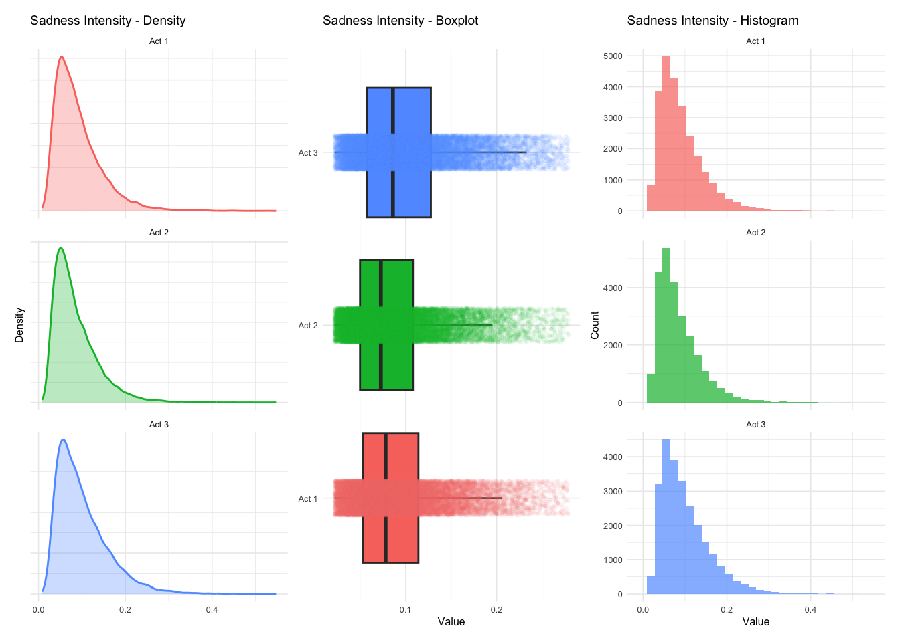
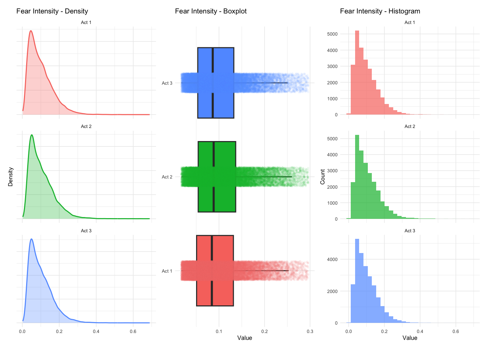
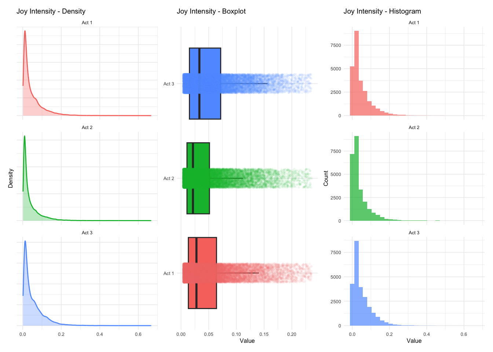
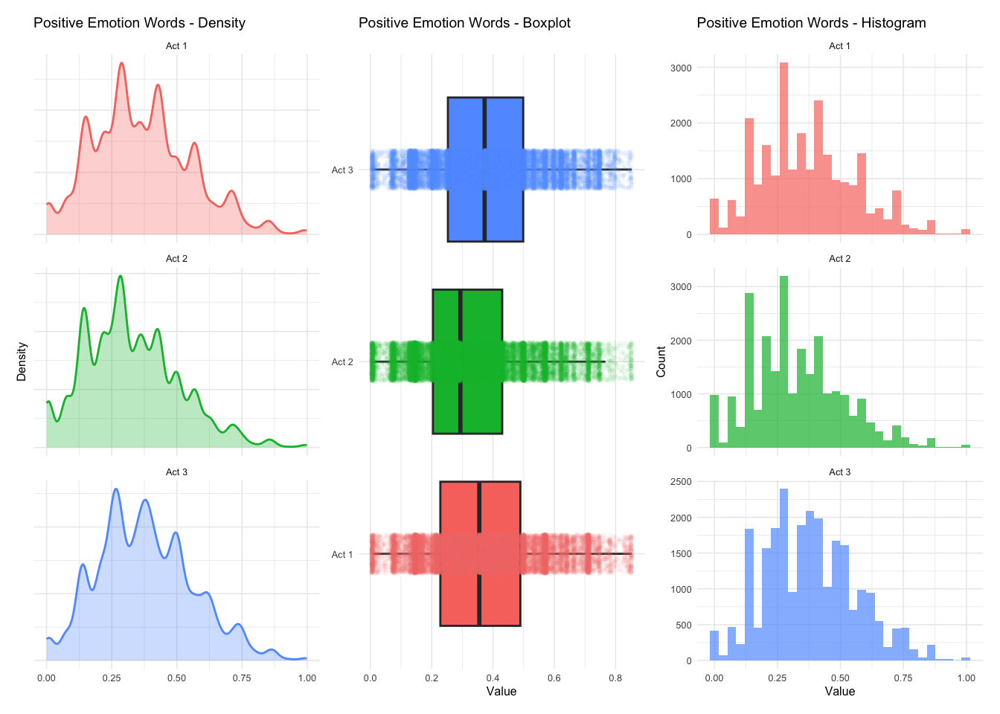
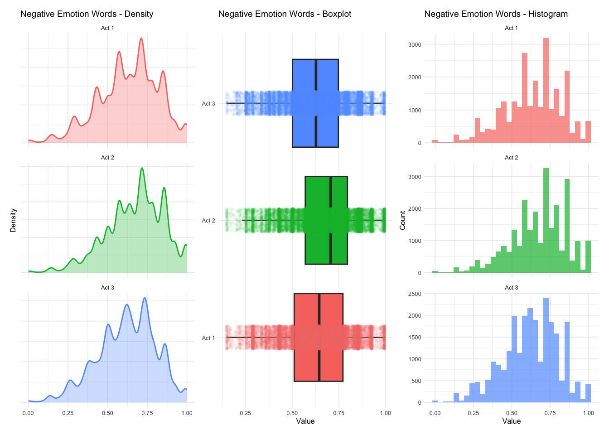
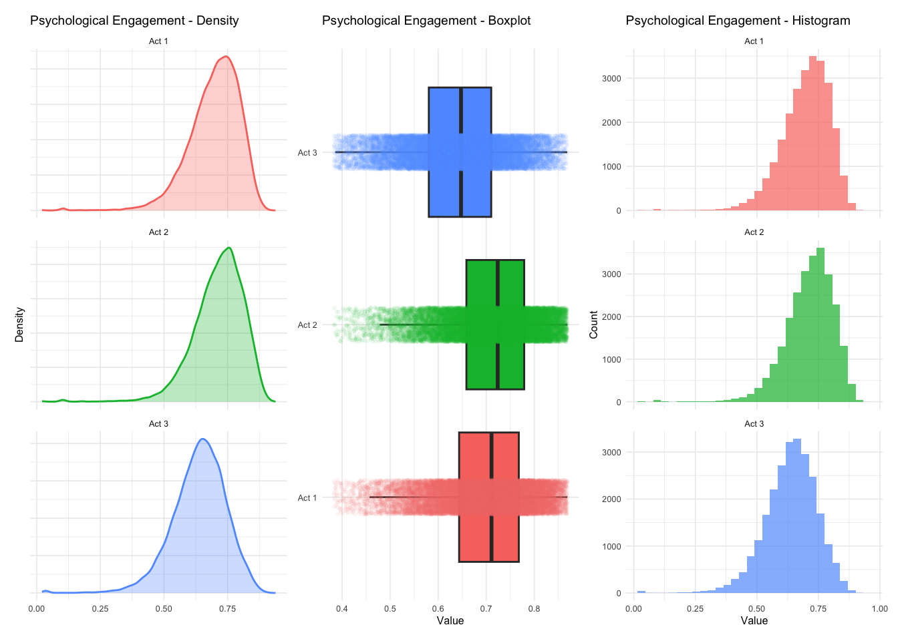
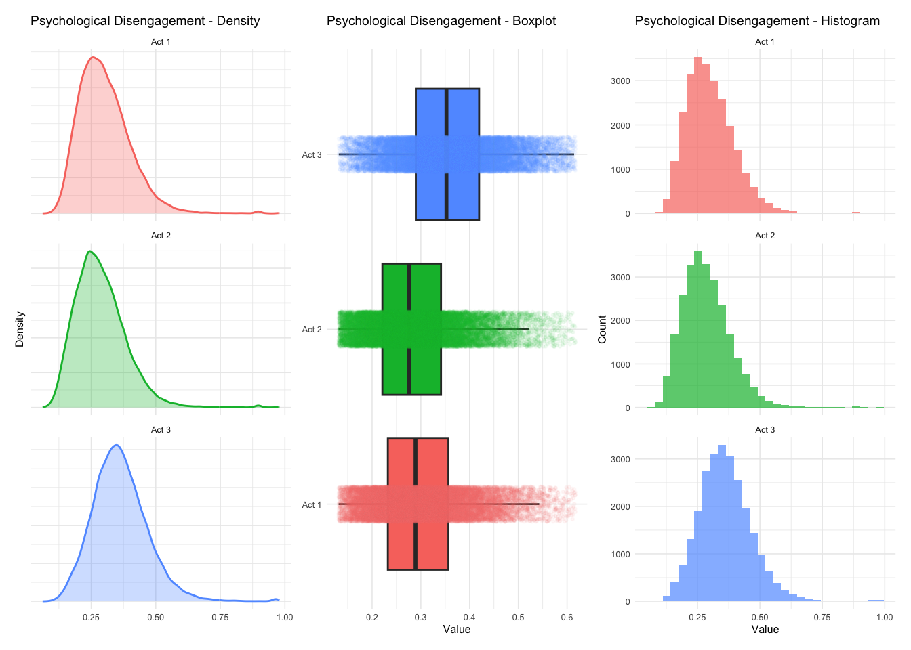
4.1.1.2 Group 2: Stylistic & Structural
| Dataset Variable | Description |
|---|---|
| wc_1, wc_2, wc_3 | Total word count contained in the act. |
| analytic_1, analytic_2, analytic_3 | The amount of analytical, formal, or logical discussion contained in the act. |
| clout_1, clout_2, clout_3 | The amount of social status, confidence, or leadership discussion contained in the act. |
| authentic_1, authentic_2, authentic_3 | The amount of honest, non-filtered, non-regulated discussion contained in the act. |
| tone_1, tone_2, tone_3 | The higher the tone, the more positive the tone in the act (below 50 is considered negative). |
| wps_1, wps_2, wps_3 | The number of words per sentence on average contained in the act. |
| sixltr_1, sixltr_2, sixltr_3 | Percentage of words longer than six letters contained in the act. |
| dic_1, dic_2, dic_3 | Percentage of words that were captured as dictionary words. |
| Variable | Mean | StdDev | Min | Max | Q25 | Median | Q75 | Skew |
|---|---|---|---|---|---|---|---|---|
| wc_1 | 129.34 | 27.80 | 0 | 397.86 | 112.79 | 131.00 | 147.71 | -0.39 |
| wc_2 | 128.91 | 27.23 | 0 | 336.80 | 112.79 | 130.21 | 146.43 | -0.31 |
| wc_3 | 108.26 | 26.56 | 0 | 306.80 | 91.60 | 109.00 | 125.50 | -0.17 |
| analytic_1 | 30.92 | 11.65 | 0 | 93.31 | 22.45 | 29.99 | 38.38 | 0.47 |
| analytic_2 | 27.60 | 11.26 | 0 | 93.26 | 19.34 | 26.33 | 34.49 | 0.66 |
| analytic_3 | 25.99 | 10.86 | 0 | 92.88 | 18.05 | 24.95 | 32.73 | 0.60 |
| clout_1 | 71.54 | 11.06 | 0 | 98.89 | 65.69 | 72.99 | 79.13 | -1.22 |
| clout_2 | 73.02 | 10.60 | 0 | 98.82 | 67.53 | 74.39 | 80.19 | -1.39 |
| clout_3 | 70.42 | 11.61 | 0 | 97.04 | 64.08 | 71.94 | 78.48 | -1.17 |
| authentic_1 | 47.63 | 13.52 | 0 | 99.00 | 38.33 | 46.94 | 56.43 | 0.24 |
| authentic_2 | 46.75 | 13.72 | 0 | 99.00 | 37.41 | 46.42 | 55.75 | 0.15 |
| authentic_3 | 50.14 | 14.12 | 0 | 99.00 | 40.61 | 49.98 | 59.51 | 0.02 |
| tone_1 | 53.52 | 15.86 | 0 | 99.00 | 42.28 | 53.28 | 64.58 | 0.02 |
| tone_2 | 52.65 | 16.14 | 0 | 98.99 | 41.10 | 52.02 | 64.02 | 0.08 |
| tone_3 | 52.03 | 15.34 | 0 | 98.26 | 41.26 | 51.64 | 62.67 | 0.04 |
| wps_1 | 7.23 | 3.85 | 0 | 137.17 | 5.74 | 6.45 | 7.43 | 9.08 |
| wps_2 | 6.70 | 3.03 | 0 | 147.96 | 5.65 | 6.30 | 7.08 | 14.39 |
| wps_3 | 7.00 | 3.67 | 0 | 143.86 | 5.51 | 6.26 | 7.29 | 8.95 |
| sixltr_1 | 11.34 | 2.51 | 0 | 27.30 | 9.72 | 11.17 | 12.77 | 0.44 |
| sixltr_2 | 11.08 | 2.49 | 0 | 42.76 | 9.44 | 10.85 | 12.48 | 0.65 |
| sixltr_3 | 10.48 | 2.61 | 0 | 29.05 | 8.74 | 10.18 | 11.91 | 0.61 |
| dic_1 | 86.77 | 5.95 | 0 | 98.65 | 85.26 | 87.81 | 89.86 | -6.13 |
| dic_2 | 88.31 | 5.28 | 0 | 99.63 | 86.88 | 88.96 | 90.77 | -8.73 |
| dic_3 | 87.68 | 6.30 | 0 | 97.33 | 85.89 | 88.80 | 91.06 | -6.31 |
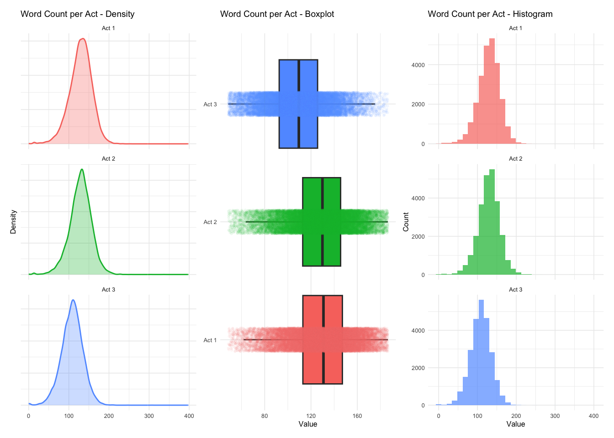
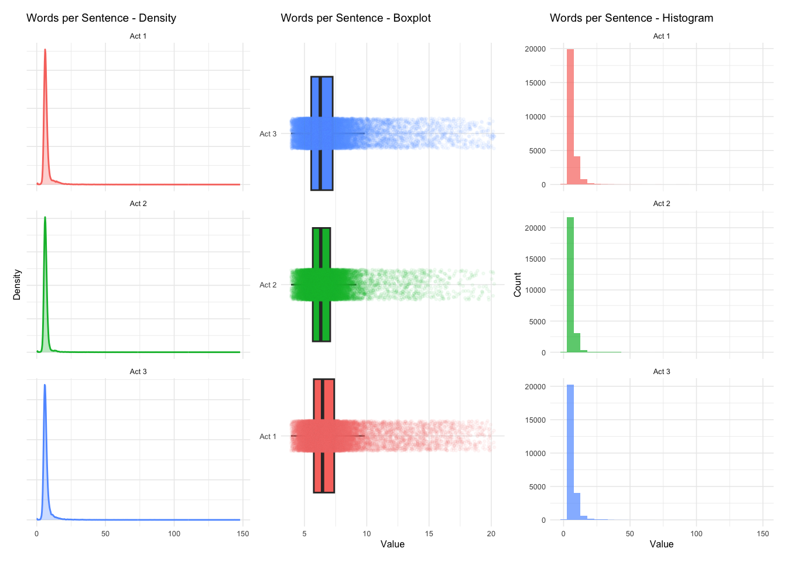
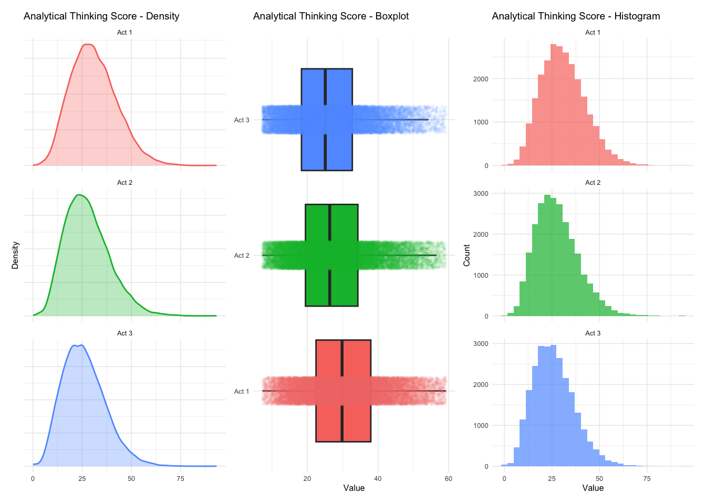
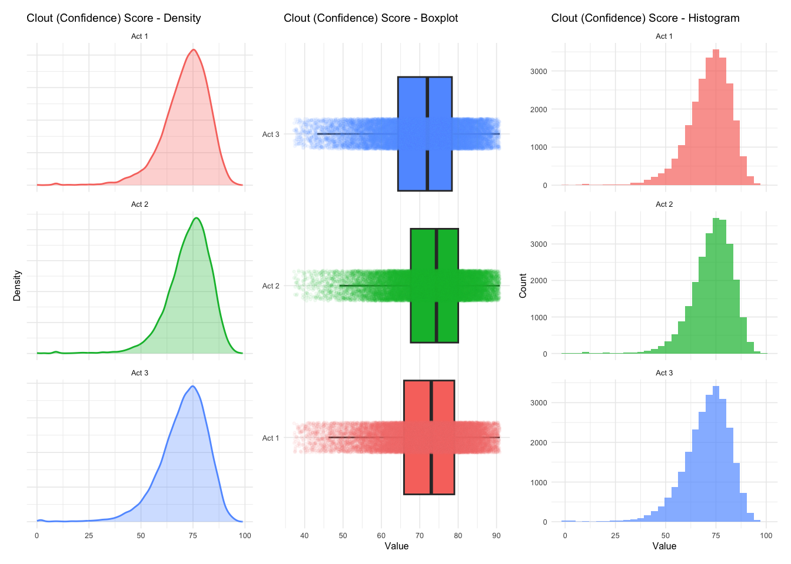
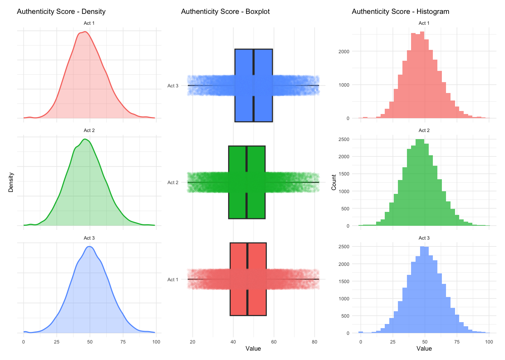
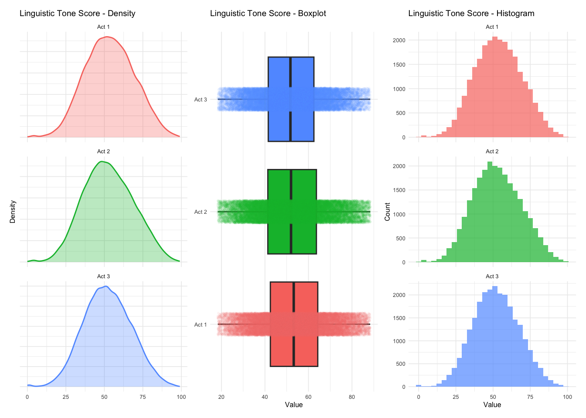
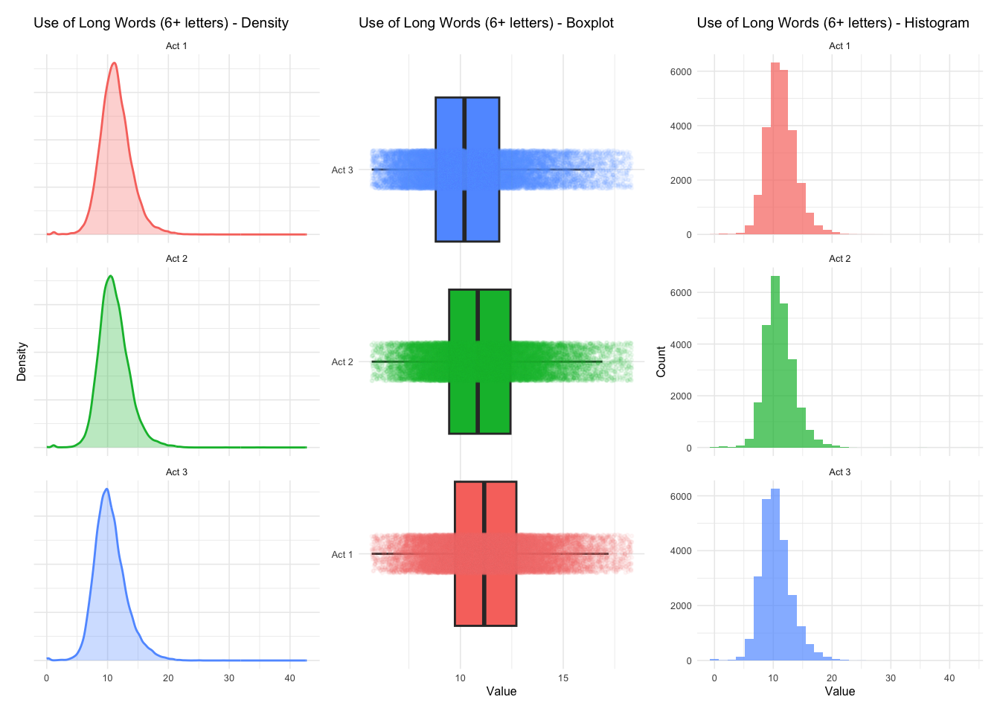
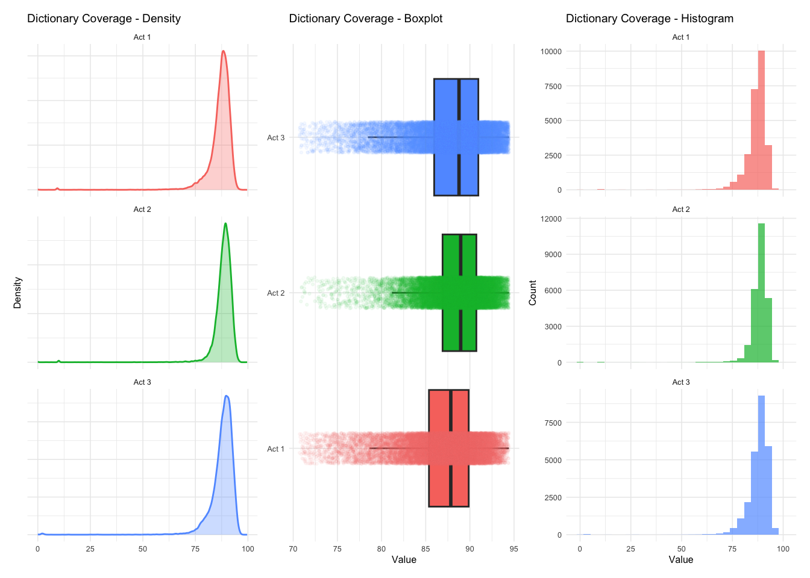
Note: For Tone, below 50 is considered negative. May consider transforming this variable.
4.1.1.3 Group 3: Cognitive Processes
| Dataset Variable | Description |
|---|---|
| cogproc_1, cogproc_2, cogproc_3 | An aggregate measurement that looks at the number of words that reflect active information processing and mental activities, including causation contained in the act. |
| insight_1, insight_2, insight_3 | One of the key elements within the cognitive process measurement that considers realizations contained in the act. |
| cause_1, cause_2, cause_3 | Another key element within the cognitive process measurement that examines causation between two elements contained in the act. |
| discrep_1, discrep_2, discrep_3 | A key element of the cognitive process measurement that considers what should, could, or would have happened, but never did, (exploring counterfactuals) contained in the act. |
| tentat_1, tentat_2, tentat_3 | A key element in the cognitive processes that looks at whether something could or could not happen (e.g., maybe, perhaps) contained in the act. |
| certain_1, certain_2, certain_3 | A key element in the cognitive processes that looks at absolute language (e.g., always, never) contained in the act. |
| differ_1, differ_2, differ_3 | An element that considers differentiation between two elements such as (hasn’t , but, else) contained in the act. |
| Variable | Mean | StdDev | Min | Max | Q25 | Median | Q75 | Skew |
|---|---|---|---|---|---|---|---|---|
| cogproc_1 | 10.55 | 1.75 | 0 | 23.66 | 9.48 | 10.58 | 11.66 | -0.39 |
| cogproc_2 | 11.30 | 1.79 | 0 | 20.84 | 10.19 | 11.32 | 12.45 | -0.46 |
| cogproc_3 | 11.06 | 2.05 | 0 | 21.68 | 9.81 | 11.12 | 12.38 | -0.43 |
| insight_1 | 2.24 | 0.66 | 0 | 7.07 | 1.80 | 2.21 | 2.64 | 0.31 |
| insight_2 | 2.47 | 0.69 | 0 | 6.24 | 2.01 | 2.45 | 2.91 | 0.19 |
| insight_3 | 2.44 | 0.77 | 0 | 9.84 | 1.92 | 2.40 | 2.92 | 0.40 |
| cause_1 | 1.31 | 0.45 | 0 | 6.14 | 1.02 | 1.28 | 1.57 | 0.72 |
| cause_2 | 1.39 | 0.45 | 0 | 8.76 | 1.09 | 1.36 | 1.66 | 0.64 |
| cause_3 | 1.33 | 0.50 | 0 | 8.54 | 0.99 | 1.29 | 1.61 | 1.04 |
| discrep_1 | 1.66 | 0.52 | 0 | 5.17 | 1.31 | 1.63 | 1.98 | 0.43 |
| discrep_2 | 1.80 | 0.53 | 0 | 4.48 | 1.44 | 1.77 | 2.13 | 0.31 |
| discrep_3 | 1.76 | 0.59 | 0 | 7.02 | 1.36 | 1.72 | 2.12 | 0.49 |
| tentat_1 | 2.25 | 0.64 | 0 | 5.69 | 1.82 | 2.22 | 2.65 | 0.30 |
| tentat_2 | 2.35 | 0.64 | 0 | 6.68 | 1.93 | 2.33 | 2.75 | 0.24 |
| tentat_3 | 2.16 | 0.67 | 0 | 9.31 | 1.71 | 2.12 | 2.57 | 0.61 |
| certain_1 | 1.51 | 0.50 | 0 | 15.15 | 1.19 | 1.47 | 1.79 | 1.84 |
| certain_2 | 1.56 | 0.49 | 0 | 8.88 | 1.24 | 1.52 | 1.83 | 1.13 |
| certain_3 | 1.64 | 0.61 | 0 | 8.89 | 1.25 | 1.57 | 1.94 | 1.71 |
| differ_1 | 2.65 | 0.69 | 0 | 13.00 | 2.20 | 2.64 | 3.09 | 0.36 |
| differ_2 | 2.89 | 0.70 | 0 | 9.48 | 2.43 | 2.87 | 3.33 | 0.17 |
| differ_3 | 2.80 | 0.79 | 0 | 14.63 | 2.29 | 2.78 | 3.29 | 0.39 |
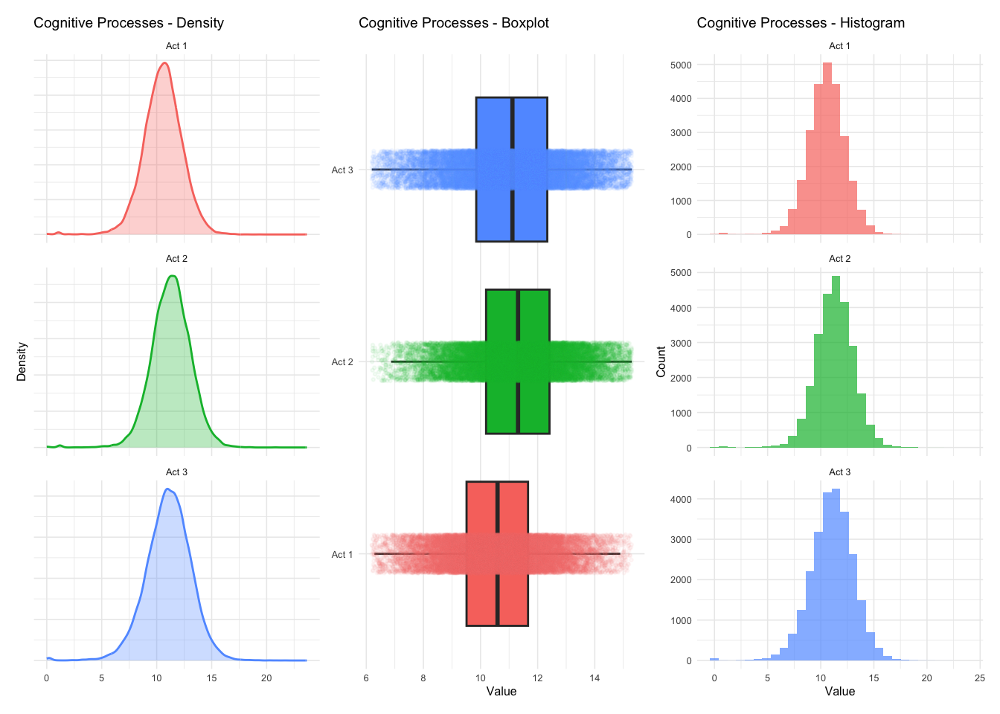
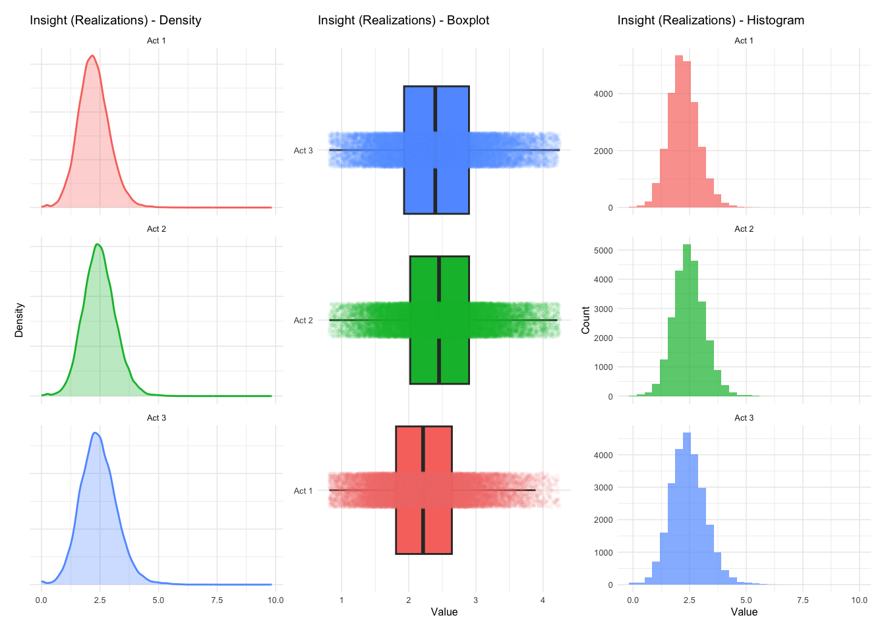
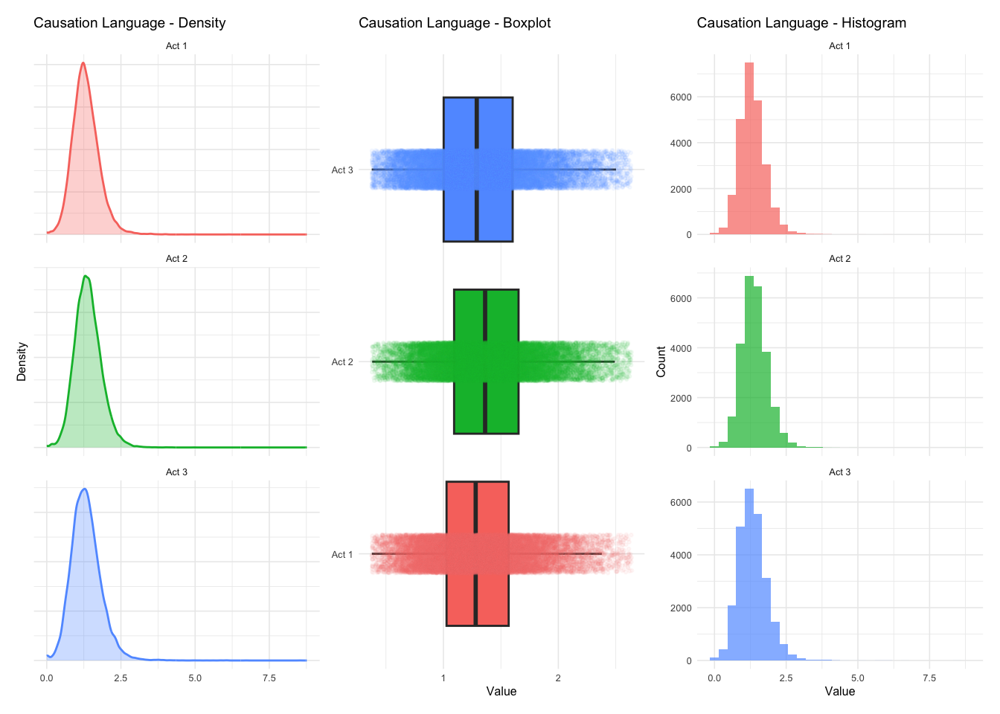
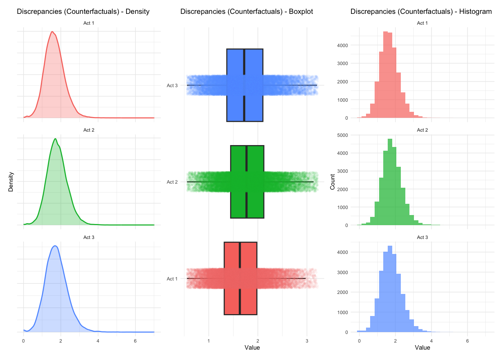
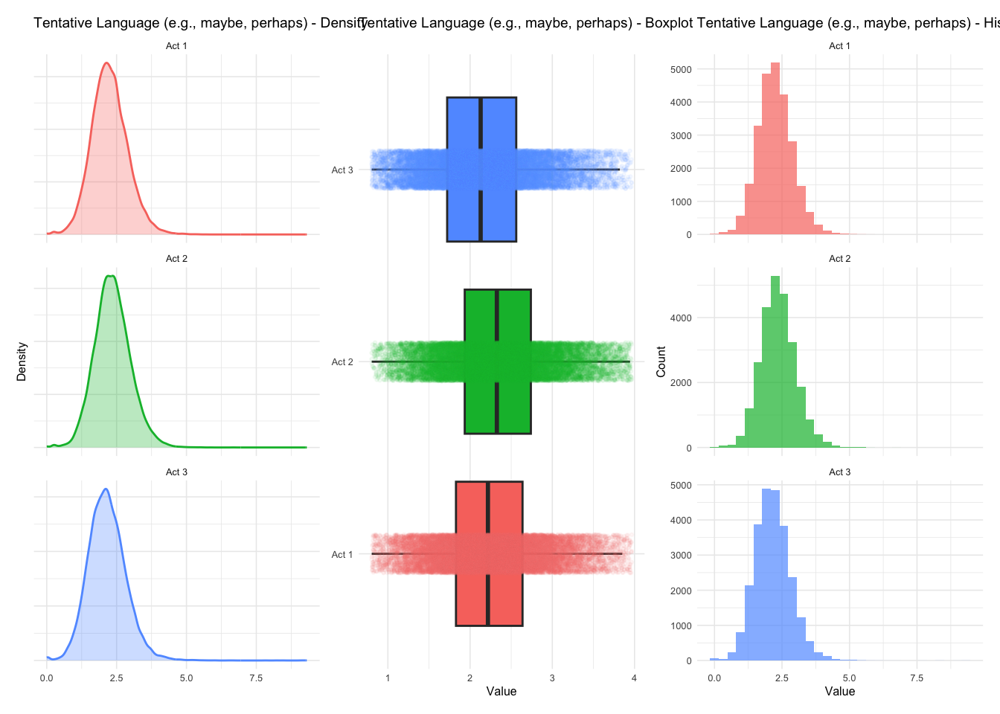
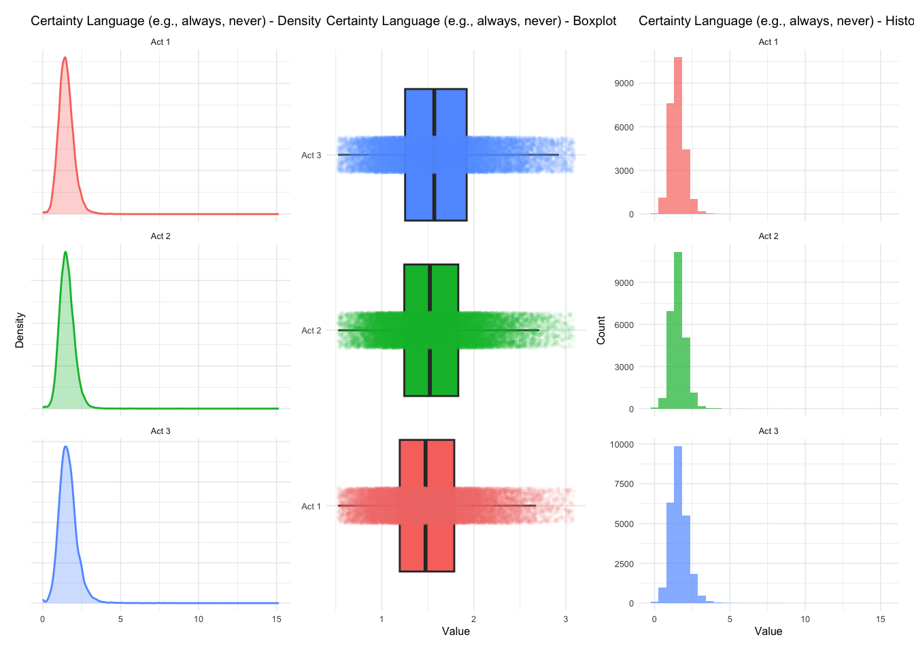
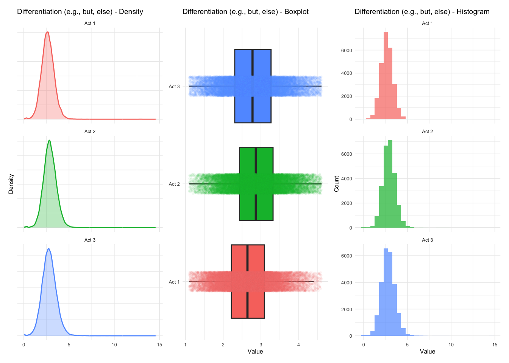
4.1.1.4 Group 4: Sensory & Perceptual Language
| Dataset Variable | Description |
|---|---|
| percept_1, percept_2, percept_3 | This is an aggregate measurement of terms that describe perception, such as look, heard, and feeling contained in the act. |
| see_1, see_2, see_3 | A key aspect of perception that looks at the amount of text around viewing or seeing contained in the act. |
| hear_1, hear_2, hear_3 | A key aspect of perception that looks at the amount of text around hearing or listening. |
| feel_1, feel_2, feel_3 | A key aspect of perception that looks at references to touch or feeling contained in the act. |
| Variable | Mean | StdDev | Min | Max | Q25 | Median | Q75 | Skew |
|---|---|---|---|---|---|---|---|---|
| percept_1 | 2.55 | 0.76 | 0 | 13.34 | 2.06 | 2.47 | 2.94 | 1.15 |
| percept_2 | 2.56 | 0.75 | 0 | 14.49 | 2.07 | 2.49 | 2.95 | 1.36 |
| percept_3 | 2.49 | 0.86 | 0 | 15.96 | 1.94 | 2.38 | 2.91 | 1.81 |
| see_1 | 1.13 | 0.51 | 0 | 9.05 | 0.80 | 1.06 | 1.38 | 1.63 |
| see_2 | 1.11 | 0.49 | 0 | 8.89 | 0.78 | 1.04 | 1.36 | 1.76 |
| see_3 | 1.07 | 0.56 | 0 | 9.88 | 0.71 | 0.98 | 1.31 | 2.29 |
| hear_1 | 0.76 | 0.42 | 0 | 12.32 | 0.49 | 0.70 | 0.95 | 2.92 |
| hear_2 | 0.79 | 0.41 | 0 | 7.75 | 0.51 | 0.73 | 0.98 | 2.07 |
| hear_3 | 0.75 | 0.46 | 0 | 14.08 | 0.47 | 0.68 | 0.95 | 3.42 |
| feel_1 | 0.50 | 0.32 | 0 | 7.56 | 0.28 | 0.44 | 0.64 | 2.37 |
| feel_2 | 0.51 | 0.32 | 0 | 7.20 | 0.29 | 0.46 | 0.66 | 2.16 |
| feel_3 | 0.52 | 0.40 | 0 | 15.62 | 0.28 | 0.45 | 0.67 | 6.52 |
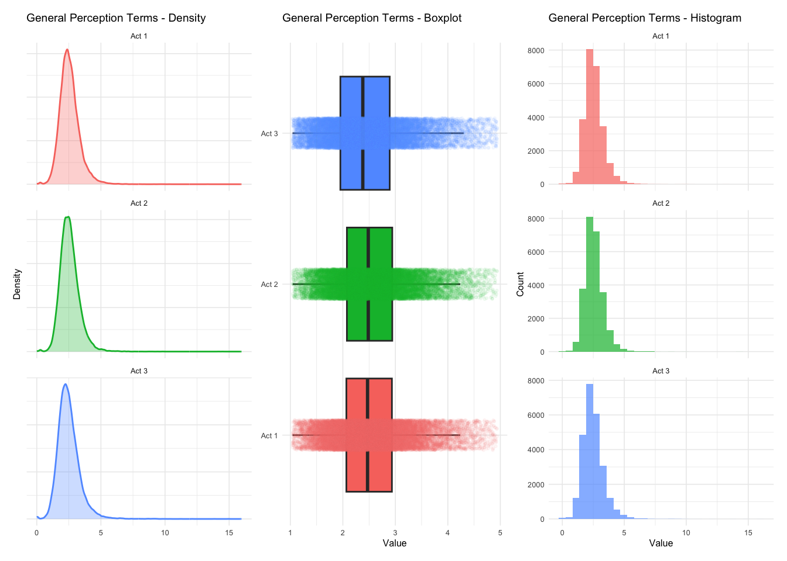
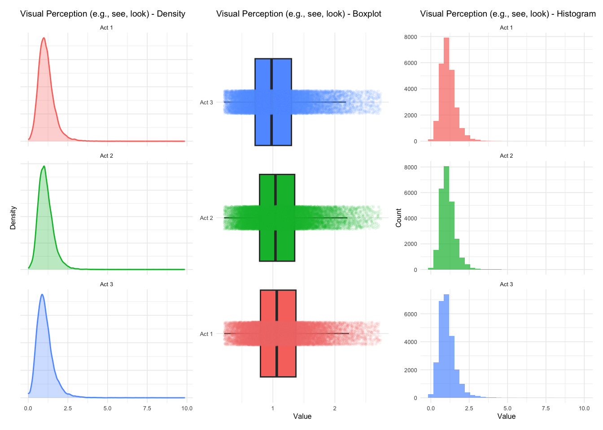
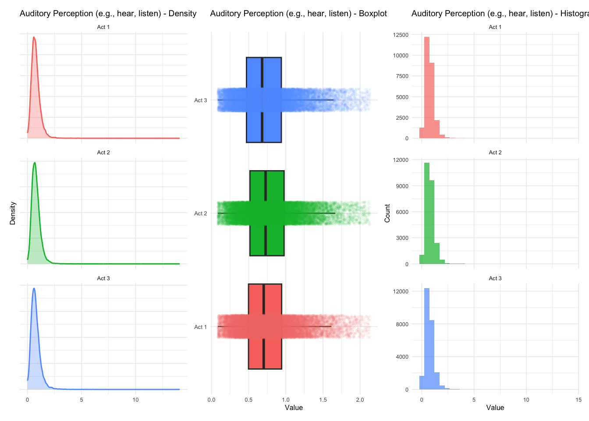
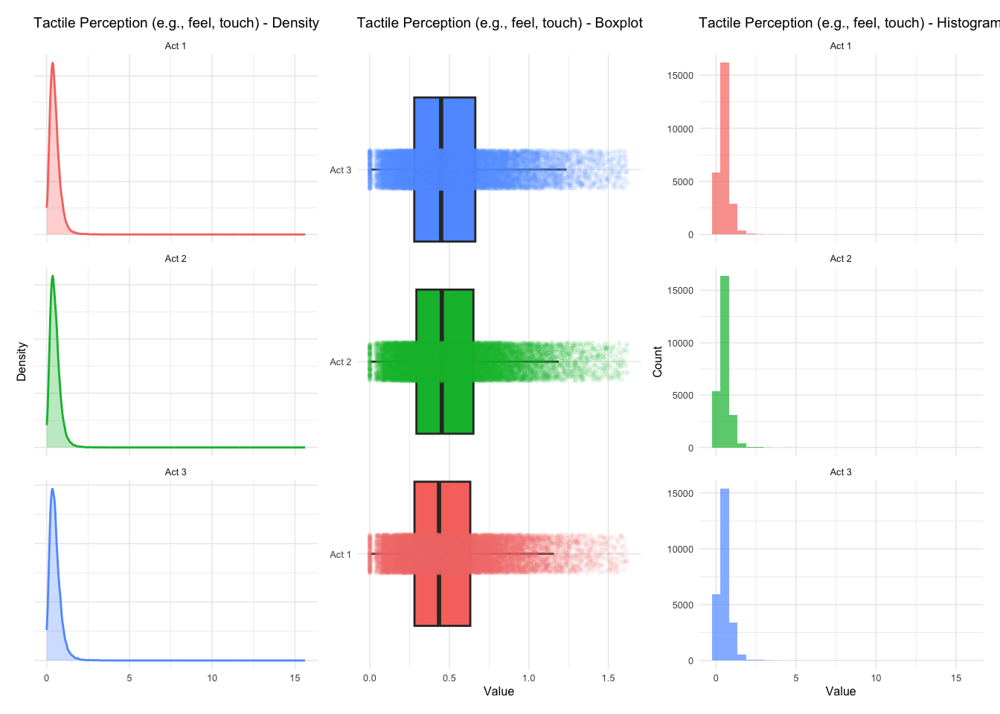
4.1.1.5 Group 5: Motivational & Social Drives
| Dataset Variable | Description |
|---|---|
| drives_1, drives_2, drives_3 | This is an aggregate measurement that looks at different motivations contained in an act. |
| affiliation_1, affiliation_2, affiliation_3 | This aspect looks at relations and affiliations such as ally, friend, or being social that are contained in an act. |
| achieve_1, achieve_2, achieve_3 | This aspect considers the ability to win, earn success, and be better that is contained in an act. |
| power_1, power_2, power_3 | This examines power dynamics and structures including superiority and bullying contained in an act. |
| reward_1, reward_2, reward_3 | This examines the types of rewards that are discussed including receiving something, prizes, and benefits that are contained in an act. |
| risk_1, risk_2, risk_3 | This examines the different types of dangers and doubts that are contained in an act. |
| Variable | Mean | StdDev | Min | Max | Q25 | Median | Q75 | Skew |
|---|---|---|---|---|---|---|---|---|
| drives_1 | 7.74 | 1.54 | 0 | 22.90 | 6.76 | 7.66 | 8.63 | 0.42 |
| drives_2 | 7.69 | 1.48 | 0 | 43.02 | 6.74 | 7.59 | 8.52 | 0.85 |
| drives_3 | 7.70 | 1.69 | 0 | 19.95 | 6.60 | 7.56 | 8.67 | 0.51 |
| affiliation_1 | 2.74 | 0.99 | 0 | 17.12 | 2.08 | 2.63 | 3.26 | 1.43 |
| affiliation_2 | 2.68 | 0.94 | 0 | 16.60 | 2.05 | 2.58 | 3.20 | 1.10 |
| affiliation_3 | 2.73 | 1.09 | 0 | 15.15 | 1.99 | 2.58 | 3.27 | 1.33 |
| achieve_1 | 0.95 | 0.42 | 0 | 5.58 | 0.66 | 0.89 | 1.17 | 1.27 |
| achieve_2 | 0.96 | 0.47 | 0 | 37.85 | 0.68 | 0.91 | 1.18 | 19.25 |
| achieve_3 | 0.96 | 0.49 | 0 | 14.23 | 0.64 | 0.89 | 1.19 | 2.38 |
| power_1 | 2.26 | 0.84 | 0 | 11.55 | 1.71 | 2.15 | 2.68 | 1.46 |
| power_2 | 2.21 | 0.78 | 0 | 9.54 | 1.69 | 2.11 | 2.59 | 1.26 |
| power_3 | 2.15 | 0.88 | 0 | 17.50 | 1.58 | 2.01 | 2.56 | 1.88 |
| reward_1 | 1.84 | 0.62 | 0 | 16.17 | 1.43 | 1.78 | 2.18 | 1.48 |
| reward_2 | 1.84 | 0.60 | 0 | 8.71 | 1.43 | 1.79 | 2.18 | 0.83 |
| reward_3 | 1.88 | 0.73 | 0 | 9.34 | 1.40 | 1.79 | 2.26 | 1.31 |
| risk_1 | 0.52 | 0.33 | 0 | 7.45 | 0.30 | 0.47 | 0.68 | 2.99 |
| risk_2 | 0.56 | 0.31 | 0 | 3.56 | 0.34 | 0.52 | 0.73 | 1.19 |
| risk_3 | 0.58 | 0.41 | 0 | 10.66 | 0.33 | 0.51 | 0.74 | 4.43 |
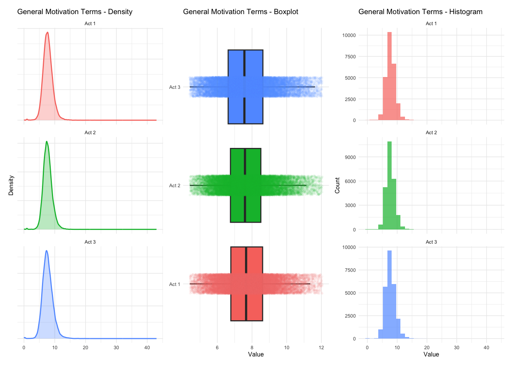
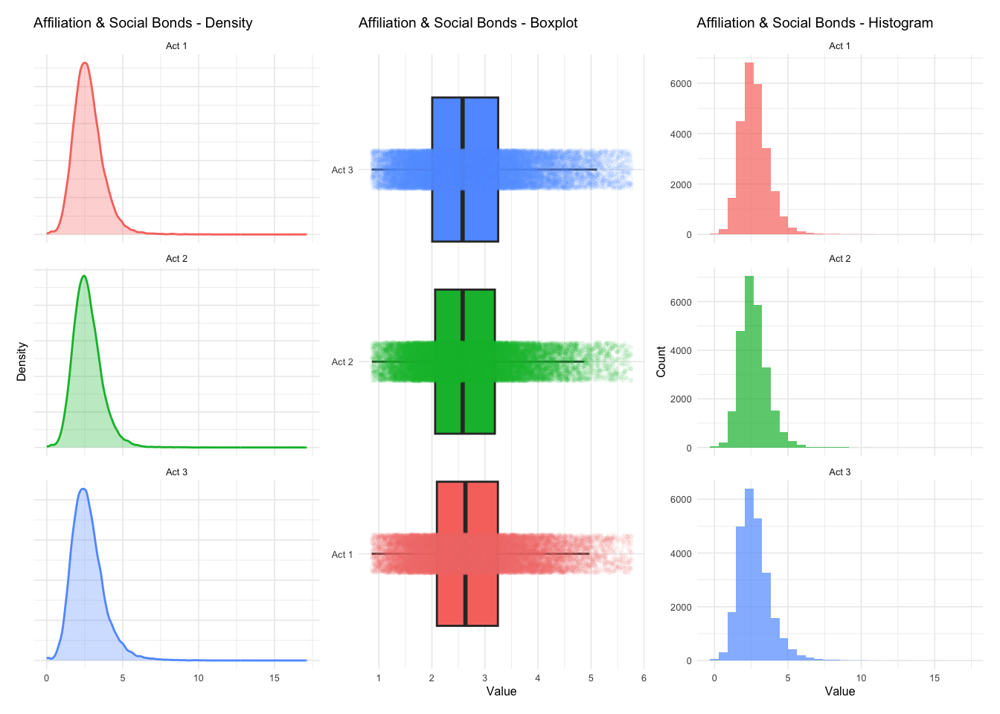
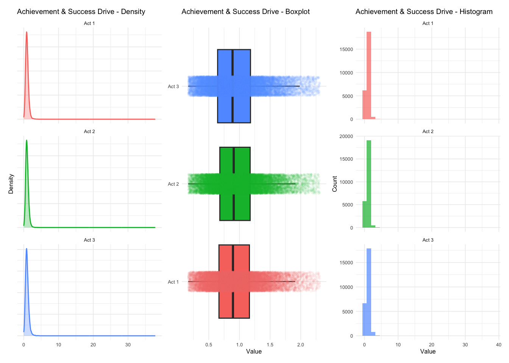

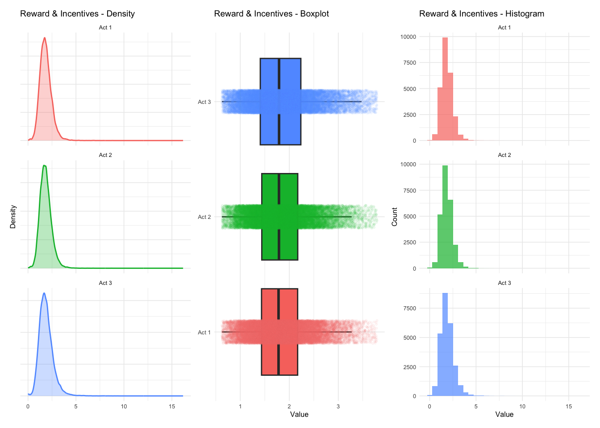
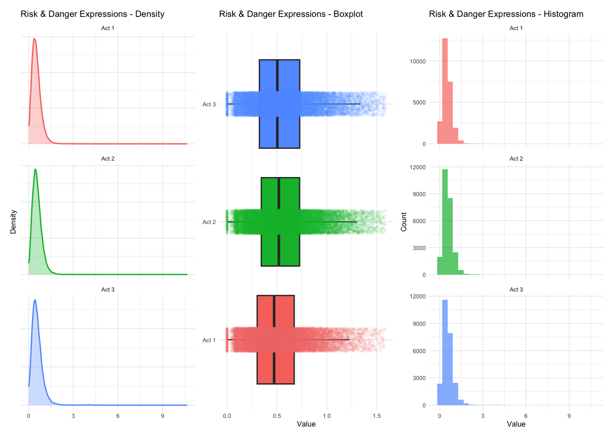
4.1.1.6 Group 6: Spatial & Temporal Orientation
| Dataset Variable | Description |
|---|---|
| affiliation_1, affiliation_2, affiliation_3 | This aspect looks at relations and affiliations such as ally, friend, or being social that are contained in an act. |
| achieve_1, achieve_2, achieve_3 | This aspect considers the ability to win, earn success, and be better that is contained in an act. |
| power_1, power_2, power_3 | This examines power dynamics and structures including superiority and bullying contained in an act. |
| reward_1, reward_2, reward_3 | This examines the types of rewards that are discussed including receiving something, prizes, and benefits that are contained in an act. |
| risk_1, risk_2, risk_3 | This examines the different types of dangers and doubts that are contained in an act. |
| relativ_1, relativ_2, relativ_3 | This aggregate measure extends toward spatial relationships such as area, bend, and exit that are contained in an act. |
| motion_1, motion_2, motion_3 | This examines the ability to move, including arrive, car, and go, that are contained in an act. |
| space_1, space_2, space_3 | This examines directions in space, including down, and in that are contained in an act. |
| time_1, time_2, time_3 | This examines time durations, including end, until and season contained in an act. |
| Variable | Mean | StdDev | Min | Max | Q25 | Median | Q75 | Skew |
|---|---|---|---|---|---|---|---|---|
| relativ_1 | 12.62 | 2.04 | 0 | 27.54 | 11.36 | 12.53 | 13.81 | 0.05 |
| relativ_2 | 12.31 | 1.96 | 0 | 37.31 | 11.07 | 12.22 | 13.47 | 0.20 |
| relativ_3 | 12.26 | 2.29 | 0 | 30.42 | 10.82 | 12.11 | 13.54 | 0.33 |
| motion_1 | 2.49 | 0.84 | 0 | 14.95 | 1.95 | 2.38 | 2.90 | 1.58 |
| motion_2 | 2.50 | 0.83 | 0 | 18.59 | 1.96 | 2.40 | 2.91 | 1.89 |
| motion_3 | 2.62 | 1.01 | 0 | 16.48 | 1.97 | 2.47 | 3.09 | 1.90 |
| space_1 | 6.23 | 1.31 | 0 | 19.89 | 5.37 | 6.14 | 6.98 | 0.44 |
| space_2 | 6.15 | 1.27 | 0 | 21.26 | 5.32 | 6.06 | 6.87 | 0.51 |
| space_3 | 5.97 | 1.44 | 0 | 19.08 | 5.02 | 5.84 | 6.77 | 0.68 |
| time_1 | 4.17 | 1.02 | 0 | 19.83 | 3.51 | 4.11 | 4.75 | 0.86 |
| time_2 | 3.93 | 0.91 | 0 | 11.83 | 3.34 | 3.88 | 4.47 | 0.43 |
| time_3 | 3.98 | 1.10 | 0 | 17.88 | 3.28 | 3.89 | 4.57 | 1.10 |
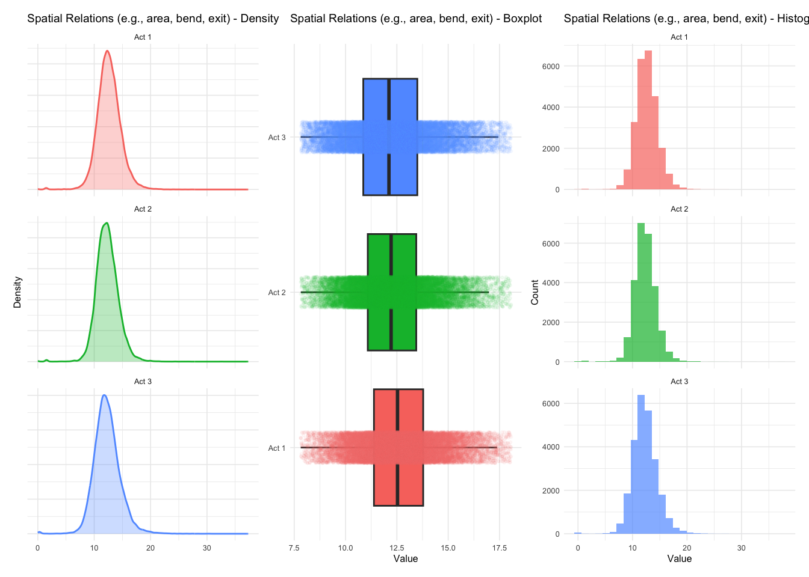
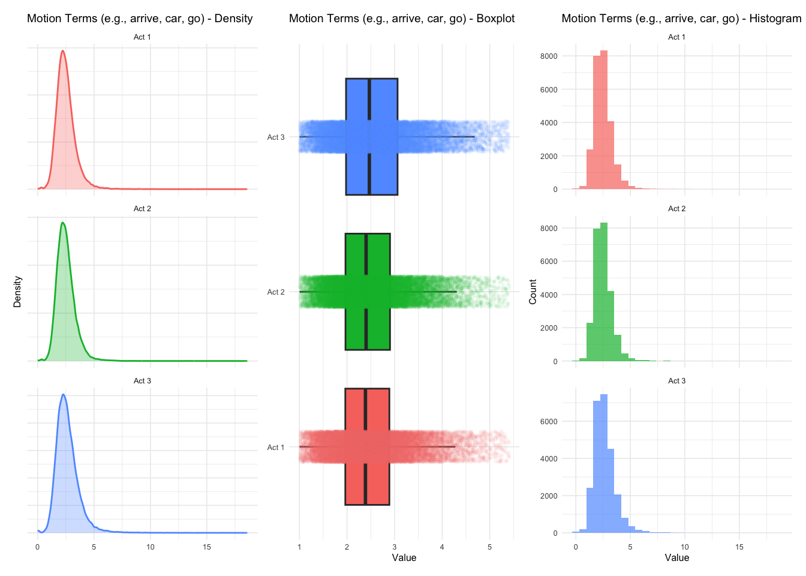
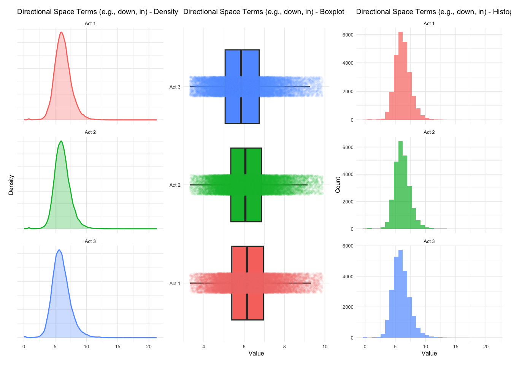
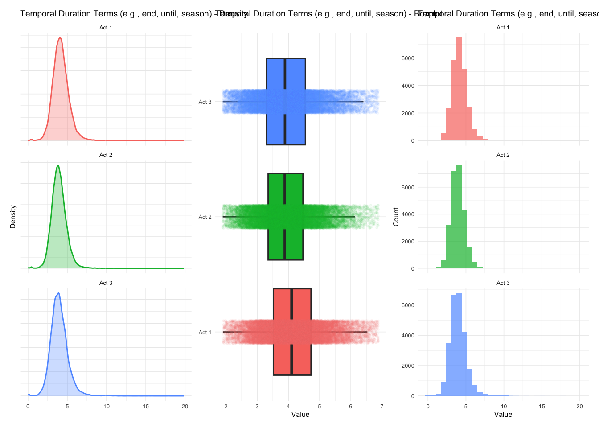
Interpretation
4.1.2 Season Level Analysis
Now, we aggregate narrative features to the season level. For each show and season, we calculate the mean of each narrative feature across all its episodes (e.g., anger_1_season_mean, sd_div_mean_2_season_mean). We then examine the summary statistics and distributions of these season-level averages.
Note: We start to explore season-level patterns with the Mean, but based on our episode-level analysis, the mean ignores the intra-season variability information. Also, as we saw at the episode level, many features are highly skewed. Related to skewness, the mean doesn’t capture the intensity or frequency of peak emotional or narrative moments.
| Season Variable (Mean) | Overall Mean | Std Dev | Min | Max | Skew | Range |
|---|---|---|---|---|---|---|
| sd_div_mean_2_season_mean | 18711.17 | 190514.68 | 2212.72 | 6853251.84 | 33.20 | 6851039.12 |
| sd_div_mean_3_season_mean | 14191.54 | 40579.49 | 1714.41 | 865010.63 | 14.72 | 863296.22 |
| sd_sum_1_season_mean | 20.85 | 1.13 | 10.68 | 23.78 | -1.71 | 13.10 |
| sd_sum_2_season_mean | 20.73 | 1.15 | 10.56 | 23.53 | -1.52 | 12.97 |
| sd_sum_3_season_mean | 21.33 | 1.22 | 4.80 | 23.70 | -4.87 | 18.90 |
| sd_scaled_1_season_mean | 670.34 | 36.40 | 339.10 | 764.94 | -1.80 | 425.83 |
| sd_scaled_2_season_mean | 666.59 | 37.10 | 334.51 | 758.21 | -1.59 | 423.70 |
| sd_scaled_3_season_mean | 686.19 | 39.37 | 151.99 | 763.08 | -4.90 | 611.09 |
| anger_1_season_mean | 0.18 | 0.07 | 0.03 | 0.50 | 1.04 | 0.47 |
| anger_2_season_mean | 0.21 | 0.07 | 0.03 | 0.53 | 1.02 | 0.50 |
| anger_3_season_mean | 0.22 | 0.07 | 0.03 | 0.50 | 0.70 | 0.47 |
| surprise_1_season_mean | 0.15 | 0.04 | 0.04 | 0.32 | 0.46 | 0.28 |
| surprise_2_season_mean | 0.14 | 0.04 | 0.04 | 0.47 | 0.97 | 0.43 |
| surprise_3_season_mean | 0.13 | 0.04 | 0.03 | 0.30 | 0.62 | 0.27 |
| disgust_1_season_mean | 0.18 | 0.05 | 0.01 | 0.37 | 0.43 | 0.36 |
| disgust_2_season_mean | 0.19 | 0.05 | 0.01 | 0.51 | 0.53 | 0.50 |
| disgust_3_season_mean | 0.17 | 0.05 | 0.01 | 0.39 | 0.52 | 0.38 |
| sadness_1_season_mean | 0.09 | 0.03 | 0.03 | 0.36 | 1.95 | 0.33 |
| sadness_2_season_mean | 0.09 | 0.03 | 0.02 | 0.34 | 1.93 | 0.32 |
| sadness_3_season_mean | 0.10 | 0.03 | 0.02 | 0.35 | 1.47 | 0.33 |
| neutral_1_season_mean | 0.26 | 0.07 | 0.08 | 0.56 | 0.02 | 0.48 |
| neutral_2_season_mean | 0.23 | 0.07 | 0.03 | 0.55 | 0.18 | 0.52 |
| neutral_3_season_mean | 0.23 | 0.06 | 0.07 | 0.59 | 0.39 | 0.52 |
| fear_1_season_mean | 0.10 | 0.03 | 0.02 | 0.33 | 0.75 | 0.31 |
| fear_2_season_mean | 0.10 | 0.03 | 0.01 | 0.34 | 0.80 | 0.33 |
| fear_3_season_mean | 0.10 | 0.03 | 0.03 | 0.25 | 0.51 | 0.22 |
| joy_1_season_mean | 0.05 | 0.03 | 0.01 | 0.42 | 2.58 | 0.41 |
| joy_2_season_mean | 0.04 | 0.03 | 0.00 | 0.42 | 3.44 | 0.41 |
| joy_3_season_mean | 0.05 | 0.03 | 0.01 | 0.39 | 2.58 | 0.39 |
| positive_1_season_mean | 0.37 | 0.11 | 0.00 | 0.99 | 0.74 | 0.99 |
| positive_2_season_mean | 0.33 | 0.10 | 0.09 | 0.92 | 0.97 | 0.84 |
| positive_3_season_mean | 0.38 | 0.10 | 0.11 | 0.99 | 0.72 | 0.88 |
| negative_1_season_mean | 0.63 | 0.11 | 0.01 | 1.00 | -0.74 | 0.99 |
| negative_2_season_mean | 0.67 | 0.10 | 0.08 | 0.91 | -0.97 | 0.84 |
| negative_3_season_mean | 0.62 | 0.10 | 0.01 | 0.89 | -0.72 | 0.88 |
| engaged_1_season_mean | 0.69 | 0.08 | 0.10 | 0.87 | -1.38 | 0.76 |
| engaged_2_season_mean | 0.71 | 0.08 | 0.10 | 0.88 | -1.33 | 0.78 |
| engaged_3_season_mean | 0.63 | 0.08 | 0.04 | 0.85 | -1.04 | 0.82 |
| not_engaged_1_season_mean | 0.31 | 0.08 | 0.13 | 0.90 | 1.38 | 0.76 |
| not_engaged_2_season_mean | 0.29 | 0.08 | 0.12 | 0.90 | 1.33 | 0.78 |
| not_engaged_3_season_mean | 0.37 | 0.08 | 0.15 | 0.96 | 1.04 | 0.82 |
| wc_1_season_mean | 128.65 | 25.98 | 13.57 | 201.32 | -0.47 | 187.75 |
| wc_2_season_mean | 128.36 | 24.90 | 13.10 | 204.82 | -0.40 | 191.73 |
| wc_3_season_mean | 107.64 | 23.41 | 2.01 | 172.25 | -0.30 | 170.24 |
| analytic_1_season_mean | 30.43 | 8.54 | 4.45 | 64.57 | 0.40 | 60.12 |
| analytic_2_season_mean | 27.17 | 8.14 | 3.06 | 60.90 | 0.68 | 57.84 |
| analytic_3_season_mean | 25.82 | 7.36 | 0.61 | 53.66 | 0.41 | 53.05 |
| clout_1_season_mean | 71.01 | 8.03 | 8.81 | 89.31 | -2.00 | 80.50 |
| clout_2_season_mean | 72.60 | 7.37 | 8.89 | 86.71 | -2.60 | 77.82 |
| clout_3_season_mean | 69.90 | 7.96 | 1.88 | 90.16 | -2.18 | 88.28 |
| authentic_1_season_mean | 47.84 | 9.07 | 4.76 | 86.86 | 0.31 | 82.10 |
| authentic_2_season_mean | 47.09 | 9.01 | 4.71 | 86.76 | 0.01 | 82.05 |
| authentic_3_season_mean | 50.23 | 9.33 | 1.19 | 90.72 | -0.32 | 89.53 |
| tone_1_season_mean | 52.99 | 11.42 | 4.28 | 89.15 | -0.12 | 84.87 |
| tone_2_season_mean | 52.33 | 11.45 | 4.07 | 88.05 | -0.02 | 83.98 |
| tone_3_season_mean | 51.58 | 10.56 | 1.14 | 90.71 | -0.09 | 89.57 |
| wps_1_season_mean | 7.22 | 3.02 | 0.60 | 46.20 | 5.81 | 45.61 |
| wps_2_season_mean | 6.69 | 2.20 | 0.62 | 39.30 | 7.26 | 38.68 |
| wps_3_season_mean | 7.00 | 2.30 | 0.13 | 25.99 | 3.88 | 25.86 |
| sixltr_1_season_mean | 11.22 | 1.88 | 1.16 | 21.32 | 0.40 | 20.15 |
| sixltr_2_season_mean | 10.95 | 1.83 | 1.06 | 19.70 | 0.50 | 18.63 |
| sixltr_3_season_mean | 10.37 | 1.86 | 0.21 | 17.88 | 0.46 | 17.67 |
| dic_1_season_mean | 86.64 | 5.10 | 9.27 | 93.83 | -8.04 | 84.57 |
| dic_2_season_mean | 88.34 | 4.51 | 9.96 | 93.77 | -11.41 | 83.80 |
| dic_3_season_mean | 87.56 | 5.05 | 2.17 | 94.31 | -10.13 | 92.14 |
| cogproc_1_season_mean | 10.52 | 1.17 | 0.47 | 13.51 | -1.68 | 13.04 |
| cogproc_2_season_mean | 11.25 | 1.16 | 1.18 | 14.34 | -1.50 | 13.16 |
| cogproc_3_season_mean | 10.97 | 1.34 | 0.25 | 14.41 | -1.63 | 14.15 |
| insight_1_season_mean | 2.23 | 0.37 | 0.00 | 3.56 | -0.47 | 3.56 |
| insight_2_season_mean | 2.46 | 0.39 | 0.00 | 3.78 | -0.41 | 3.78 |
| insight_3_season_mean | 2.41 | 0.44 | 0.00 | 4.65 | -0.24 | 4.65 |
| cause_1_season_mean | 1.31 | 0.22 | 0.00 | 3.11 | 0.19 | 3.11 |
| cause_2_season_mean | 1.38 | 0.21 | 0.00 | 2.60 | -0.26 | 2.60 |
| cause_3_season_mean | 1.31 | 0.25 | 0.00 | 3.38 | 0.76 | 3.38 |
| discrep_1_season_mean | 1.66 | 0.27 | 0.17 | 2.59 | -0.28 | 2.41 |
| discrep_2_season_mean | 1.80 | 0.27 | 0.18 | 2.75 | -0.18 | 2.57 |
| discrep_3_season_mean | 1.75 | 0.29 | 0.00 | 3.04 | -0.51 | 3.04 |
| tentat_1_season_mean | 2.23 | 0.36 | 0.00 | 3.97 | -0.37 | 3.97 |
| tentat_2_season_mean | 2.33 | 0.35 | 0.26 | 3.75 | -0.35 | 3.49 |
| tentat_3_season_mean | 2.14 | 0.34 | 0.05 | 3.52 | -0.43 | 3.47 |
| certain_1_season_mean | 1.52 | 0.24 | 0.00 | 2.78 | -0.06 | 2.78 |
| certain_2_season_mean | 1.56 | 0.21 | 0.15 | 2.63 | -0.52 | 2.48 |
| certain_3_season_mean | 1.64 | 0.26 | 0.00 | 2.63 | -0.43 | 2.63 |
| differ_1_season_mean | 2.65 | 0.43 | 0.00 | 7.97 | 0.80 | 7.97 |
| differ_2_season_mean | 2.88 | 0.40 | 0.29 | 4.22 | -0.43 | 3.93 |
| differ_3_season_mean | 2.78 | 0.43 | 0.00 | 4.09 | -0.84 | 4.09 |
| percept_1_season_mean | 2.54 | 0.39 | 0.26 | 5.33 | 0.81 | 5.07 |
| percept_2_season_mean | 2.56 | 0.35 | 0.25 | 4.20 | 0.16 | 3.95 |
| percept_3_season_mean | 2.48 | 0.39 | 0.05 | 4.71 | 0.28 | 4.66 |
| see_1_season_mean | 1.13 | 0.25 | 0.13 | 2.94 | 1.64 | 2.81 |
| see_2_season_mean | 1.10 | 0.21 | 0.12 | 3.20 | 1.06 | 3.08 |
| see_3_season_mean | 1.06 | 0.24 | 0.02 | 3.54 | 1.71 | 3.52 |
| hear_1_season_mean | 0.76 | 0.20 | 0.07 | 3.05 | 2.25 | 2.98 |
| hear_2_season_mean | 0.79 | 0.19 | 0.07 | 2.86 | 2.04 | 2.79 |
| hear_3_season_mean | 0.75 | 0.20 | 0.00 | 2.74 | 1.94 | 2.74 |
| feel_1_season_mean | 0.49 | 0.14 | 0.00 | 1.96 | 1.59 | 1.96 |
| feel_2_season_mean | 0.51 | 0.13 | 0.00 | 1.02 | 0.44 | 1.02 |
| feel_3_season_mean | 0.52 | 0.14 | 0.00 | 1.45 | 0.79 | 1.45 |
| drives_1_season_mean | 7.74 | 0.98 | 0.94 | 14.45 | 0.28 | 13.51 |
| drives_2_season_mean | 7.72 | 0.90 | 0.92 | 13.79 | 0.14 | 12.87 |
| drives_3_season_mean | 7.71 | 0.97 | 0.21 | 13.81 | -0.13 | 13.60 |
| affiliation_1_season_mean | 2.75 | 0.56 | 0.28 | 8.29 | 1.75 | 8.01 |
| affiliation_2_season_mean | 2.71 | 0.52 | 0.26 | 7.39 | 1.48 | 7.13 |
| affiliation_3_season_mean | 2.74 | 0.60 | 0.07 | 7.72 | 1.67 | 7.64 |
| achieve_1_season_mean | 0.95 | 0.24 | 0.11 | 4.00 | 3.36 | 3.89 |
| achieve_2_season_mean | 0.96 | 0.20 | 0.00 | 3.18 | 1.40 | 3.18 |
| achieve_3_season_mean | 0.95 | 0.23 | 0.02 | 3.16 | 1.45 | 3.13 |
| power_1_season_mean | 2.26 | 0.56 | 0.30 | 11.55 | 4.21 | 11.24 |
| power_2_season_mean | 2.20 | 0.46 | 0.29 | 5.40 | 1.67 | 5.12 |
| power_3_season_mean | 2.14 | 0.49 | 0.05 | 5.14 | 1.45 | 5.09 |
| reward_1_season_mean | 1.83 | 0.32 | 0.17 | 3.27 | -0.02 | 3.11 |
| reward_2_season_mean | 1.84 | 0.31 | 0.25 | 4.19 | 0.33 | 3.94 |
| reward_3_season_mean | 1.89 | 0.35 | 0.06 | 4.27 | 0.42 | 4.21 |
| risk_1_season_mean | 0.52 | 0.15 | 0.00 | 1.18 | 0.68 | 1.18 |
| risk_2_season_mean | 0.56 | 0.17 | 0.00 | 2.86 | 2.68 | 2.86 |
| risk_3_season_mean | 0.57 | 0.19 | 0.00 | 2.25 | 2.18 | 2.25 |
| relativ_1_season_mean | 12.54 | 1.25 | 1.45 | 18.17 | -1.24 | 16.72 |
| relativ_2_season_mean | 12.28 | 1.17 | 1.44 | 18.41 | -1.06 | 16.97 |
| relativ_3_season_mean | 12.23 | 1.34 | 0.31 | 18.42 | -0.99 | 18.12 |
| motion_1_season_mean | 2.50 | 0.46 | 0.30 | 6.25 | 1.51 | 5.95 |
| motion_2_season_mean | 2.51 | 0.44 | 0.30 | 5.95 | 1.18 | 5.65 |
| motion_3_season_mean | 2.64 | 0.54 | 0.07 | 5.83 | 1.11 | 5.76 |
| space_1_season_mean | 6.20 | 0.81 | 0.76 | 9.31 | -0.07 | 8.54 |
| space_2_season_mean | 6.15 | 0.77 | 0.75 | 11.36 | 0.25 | 10.61 |
| space_3_season_mean | 5.96 | 0.84 | 0.14 | 10.07 | 0.07 | 9.93 |
| time_1_season_mean | 4.12 | 0.52 | 0.41 | 5.91 | -0.99 | 5.50 |
| time_2_season_mean | 3.90 | 0.44 | 0.42 | 6.38 | -1.10 | 5.97 |
| time_3_season_mean | 3.94 | 0.51 | 0.11 | 6.68 | -0.83 | 6.56 |
4.1.2.1 Group 1: Immersion & Emotion
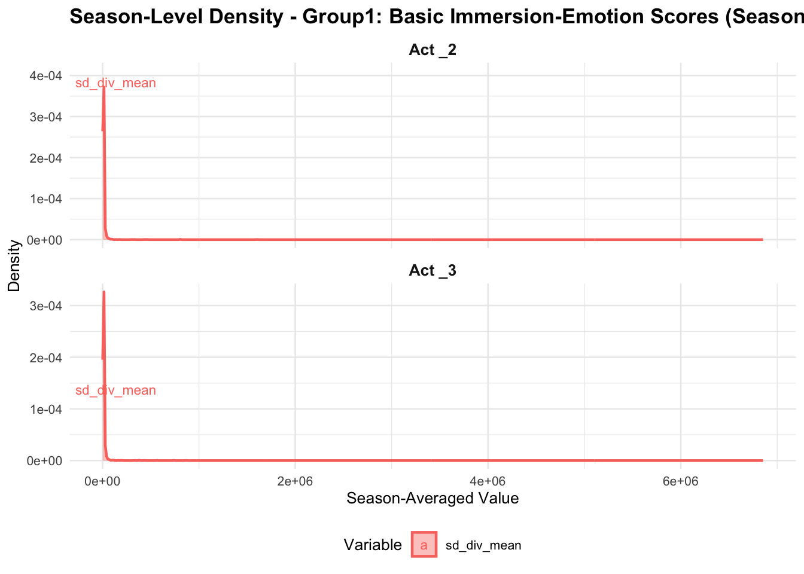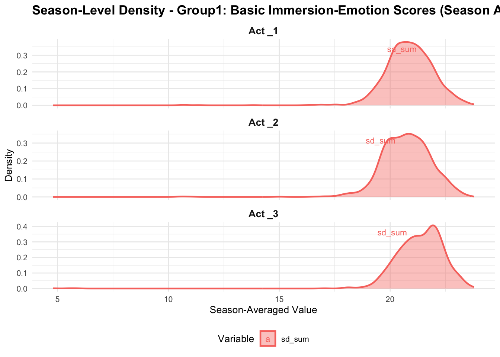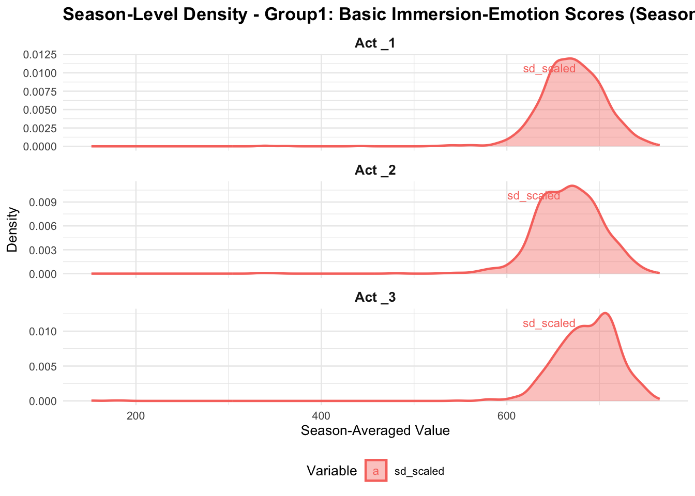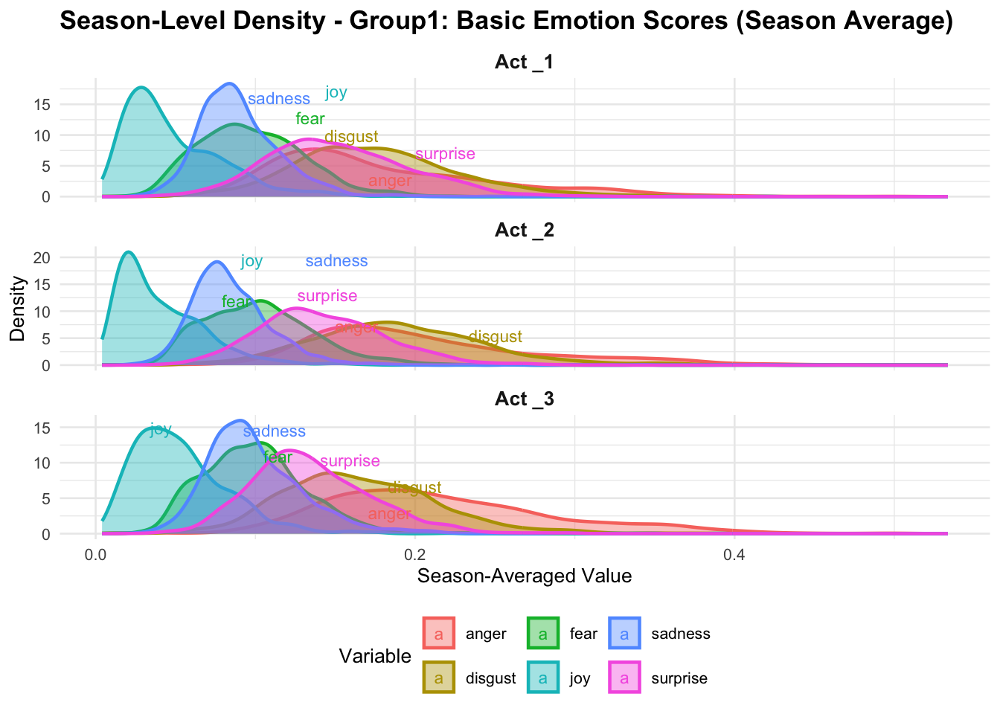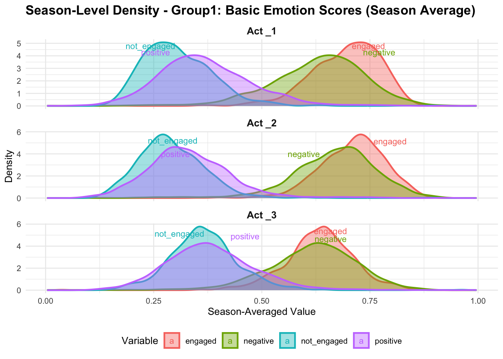
Note: For Tone, below 50 is considered negative.
4.1.2.2 Group 2: Stylistic & Structural
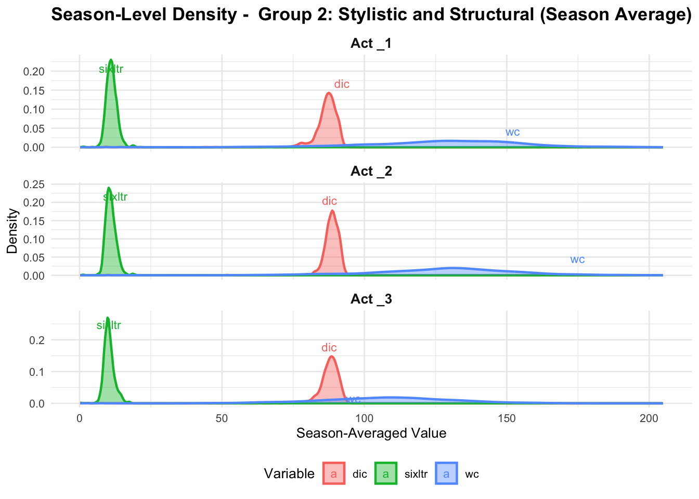
4.1.2.3 Group 3: Cognitive Processes
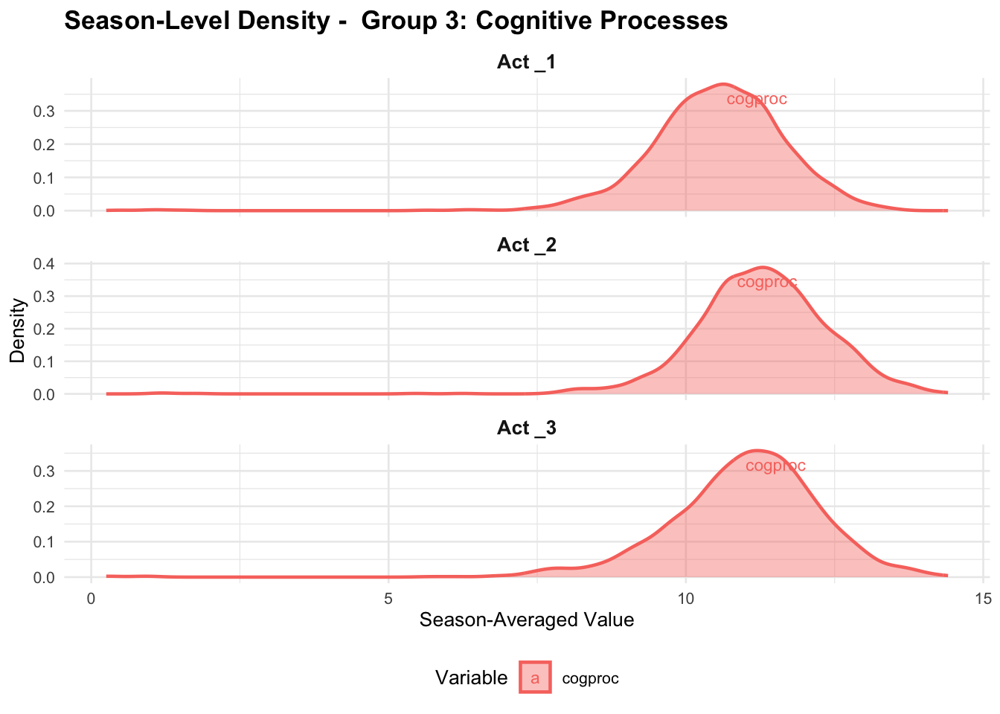
4.1.2.4 Group 4: Sensory & Perceptual Language
4.1.2.6 Group 6: Spatial & Temporal Orientation
Interpretation
This season-level view, based only on feature means, highlights stylistic choices (analytic, tone, wc, etc.) as showing the most variation between seasons. While core emotional and cognitive averages are more consistent across seasons, outlier seasons exist, and the typical 3-act structure remains visible on average. For a complete picture, these mean-based findings should be complemented by analyzing intra-season variability (like SD per season) and peak intensity (like quantiles per season).
| Finding Category | Observation | Example Variables & Values | For Downstream Analysis |
|---|---|---|---|
| 1. Distribution Smoothing | Averaging across episodes reduces extreme values and generally reduces skewness compared to episode level. | certain_1_season_mean (Skew -0.06 vs. Episode 1.84); analytic_3_season_mean (Skew 0.41 vs. Episode 0.60). | Season-level means provide a more stable baseline, useful for modeling overall season outcomes (e.g., awards, ratings). |
| 2. Persistent Skewness | Despite smoothing, some season averages remain highly skewed, indicating outlier seasons. | Positive: joy_2 (Skew 3.44), wps_2 (Skew 7.26), power_1 (Skew 4.21).<br>Negative: dic_2 (Skew -11.41). | Investigate outlier seasons. Their unusual profiles may correlate with Profit (e.g., joy) or Prestige (power). Consider addressing skew in models. |
| 3. High Between-Season Variability | Stylistic, tonal, and structural features vary the most across seasons. | analytic (SD ~7-9), clout (SD ~7-8), tone (SD ~10-11), wc (SD ~23-26). | Prioritize these high-variance features in season-level prediction models for Profit vs. Prestige outcomes. |
| 4. Low Between-Season Variability | Core emotions and cognitive features are more stable across seasons. | sadness (SD ~0.03), fear (SD ~0.03), insight (SD ~0.4), certain (SD ~0.2-0.3). | These features may require alternative metrics (e.g., medians, quantiles) to detect subtle but meaningful variation. |
| 5. Average Act Structure | Typical 3-act arc patterns persist at the season level. | cogproc_2_season_mean > Acts 1/3; wc_3_season_mean < Acts 1/2; neg_2_season_mean > Acts 1/3. | Narrative arc shape remains meaningful. Consider modeling act-to-act differences (e.g., Act2 - Act1). |
| 6. Limitation Reminder | This summary uses only season means and ignores intra-season peaks/variability. | N/A | Complement with intra-season SDs, medians, or quantiles for richer insight, especially for low-variance or skewed features. |
4.2 Distributions by Genre
| Simple_Category | Genres |
|---|---|
| Drama | Action, Action drama, Action fiction, Action-adventure, Adventure, Adventure drama, Anthology, Crime, Crime drama, Drama, Fantasy, Family drama, Historical drama, Horror, Legal drama, Legal thriller, Medical drama, Mystery, Neo-Western, Period drama, Political drama, Political thriller, Police procedural, Procedural, Procedural drama, Psychological drama, Psychological horror, Psychological thriller, Science fantasy, Science fiction, Serial drama, Sports drama, Superhero, Supernatural, Supernatural drama, Teen drama, Western |
| Comedy | Animated sitcom, Black comedy, Comedy, Comedy-Drama, Comedy horror, Cringe comedy, Family sitcom, Mockumentary, Musical, News satire, Period sitcom, Political satire, Romantic comedy, Sitcom, Sketch comedy, Adult animation |
| Other / Exclude | Docu-reality, Reality competition, Talk show, Variety |
4.2.1 Episode Level Analysis
Interpretation
4.2.2 Season Level Analysis
Interpretation
4.3 Distributions by Time Period
4.3.1 Episode Level Analysis
Interpretation
4.3.2 Season Level Analysis
Interpretation
4.4 Distributions by Network
(New Section)
4.4.1 Episode Level Analysis
Interpretation
4.4.2 Season Level Analysis
Interpretation
6 Bivariate Analysis (Preliminary)
(Optional but Recommended Next Step)
6.1 Narrative Features vs. Reward Metrics
Interpretation
7 Summary & Next Steps
(Your summary of findings and planned next steps)